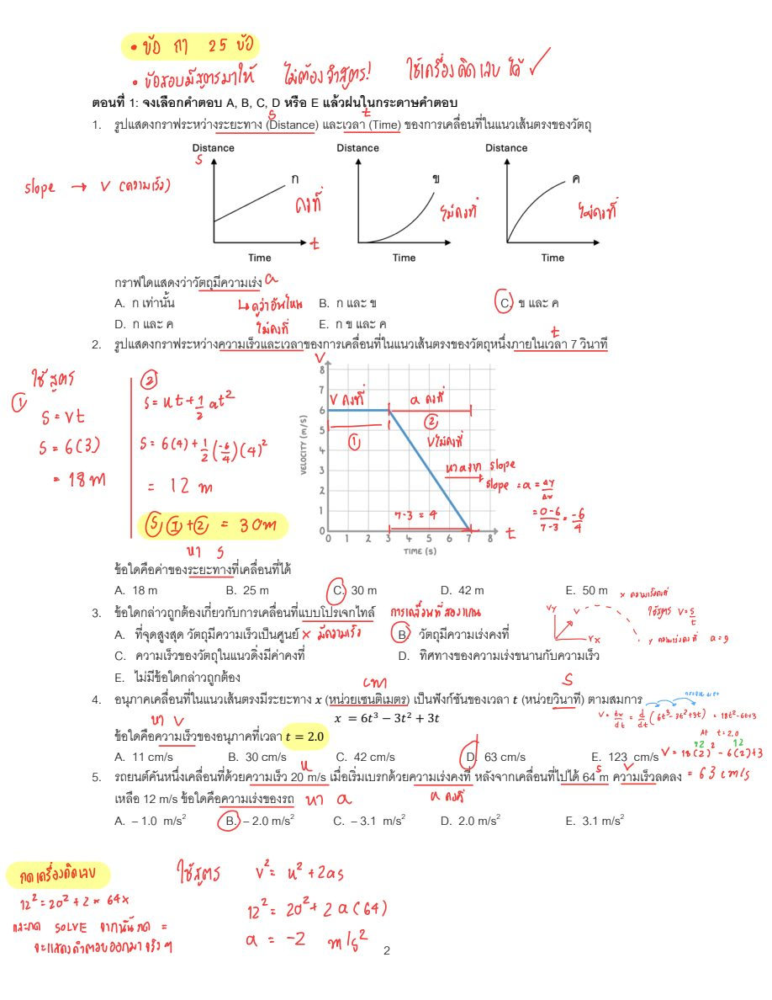
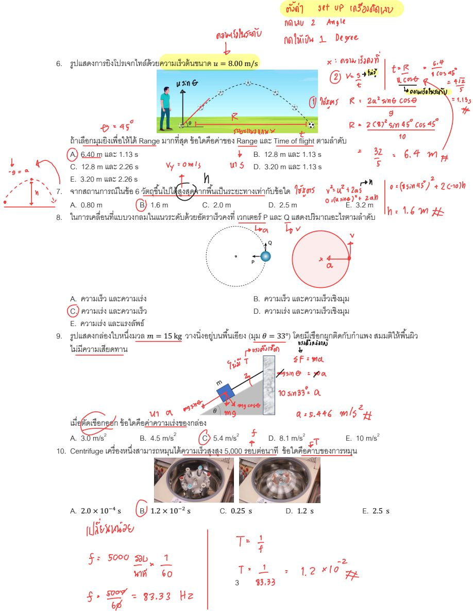
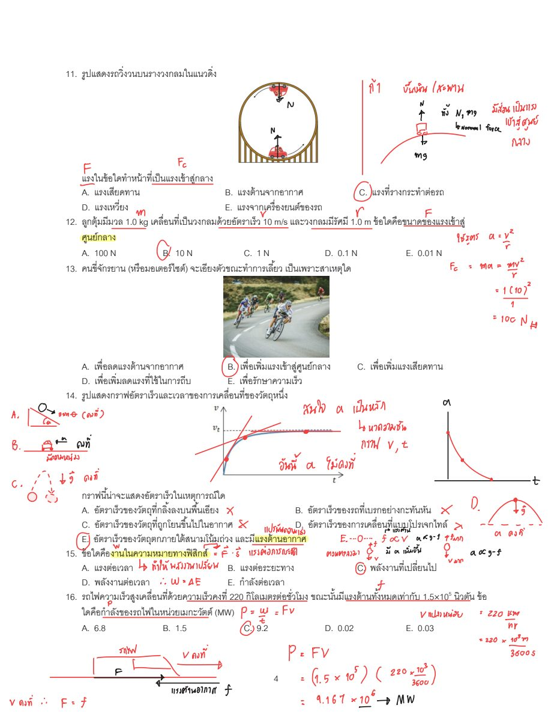
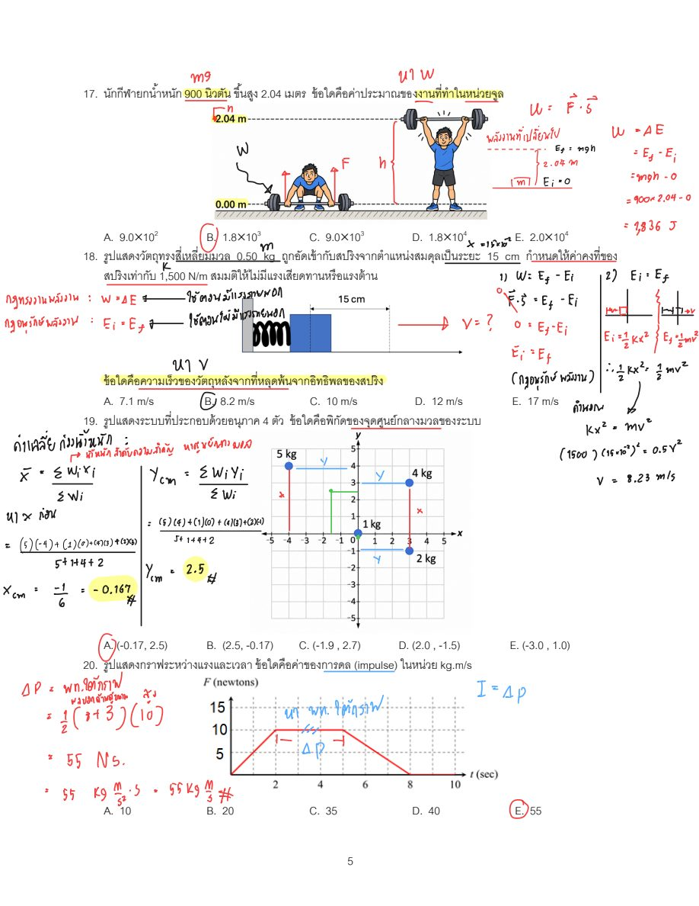
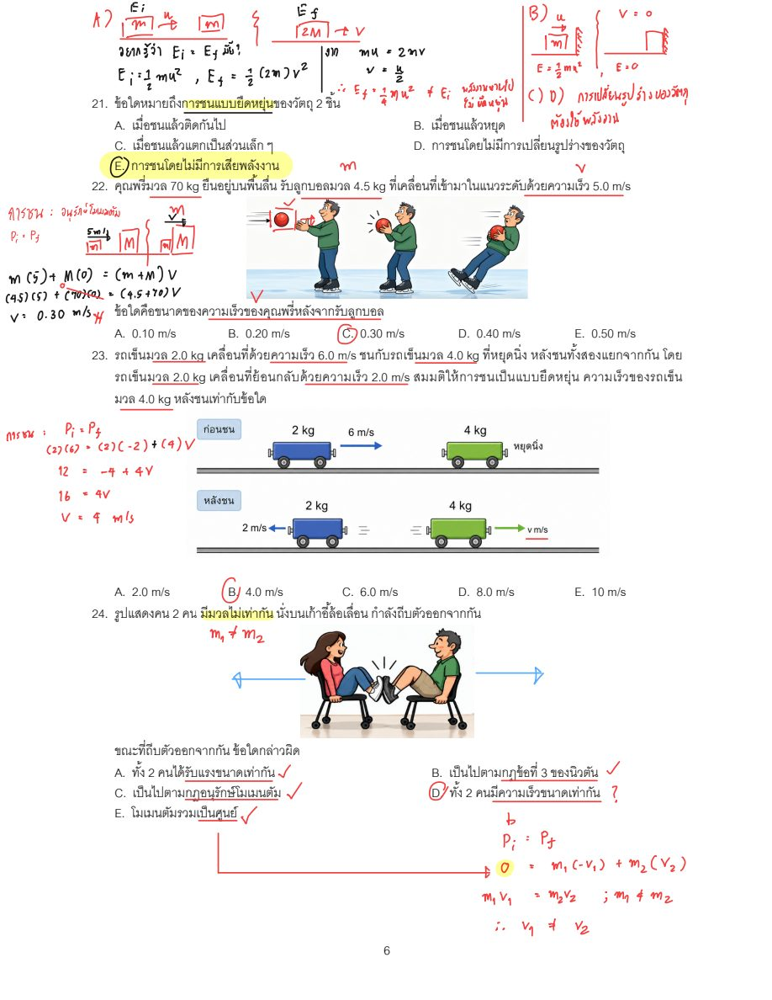
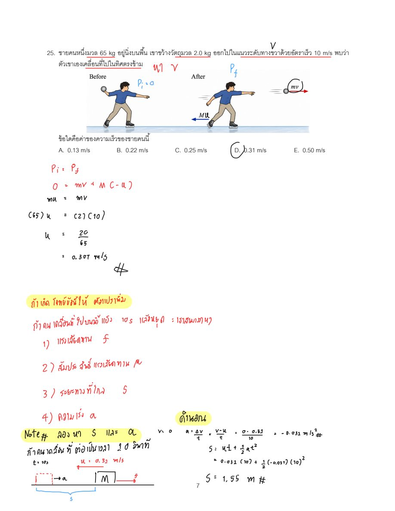
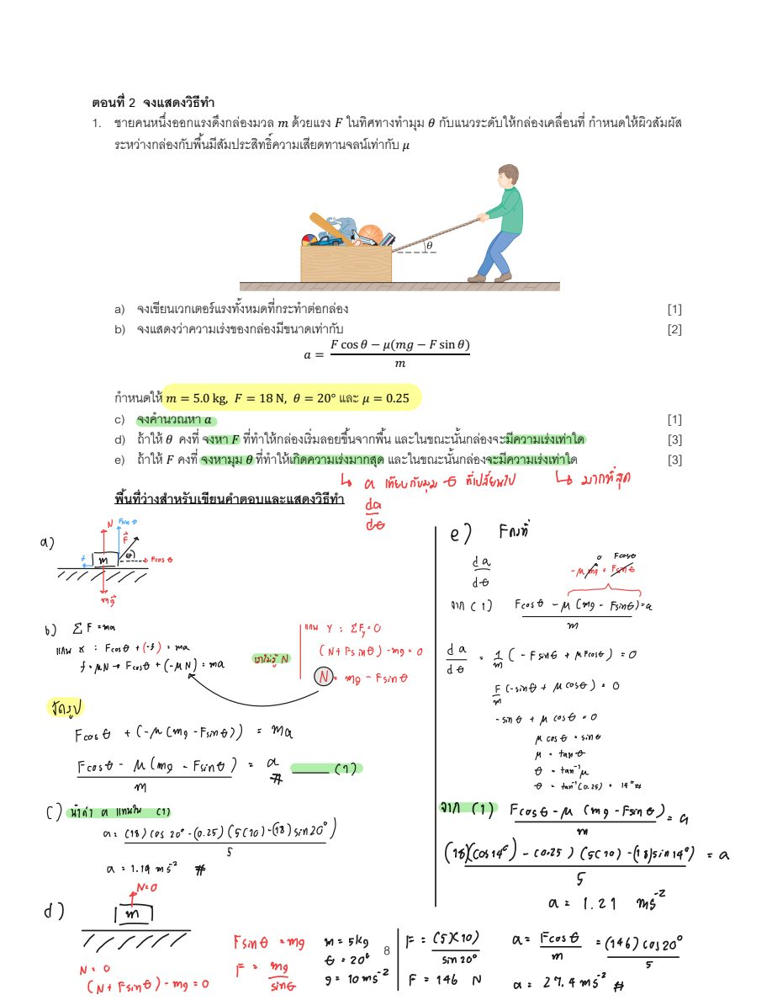
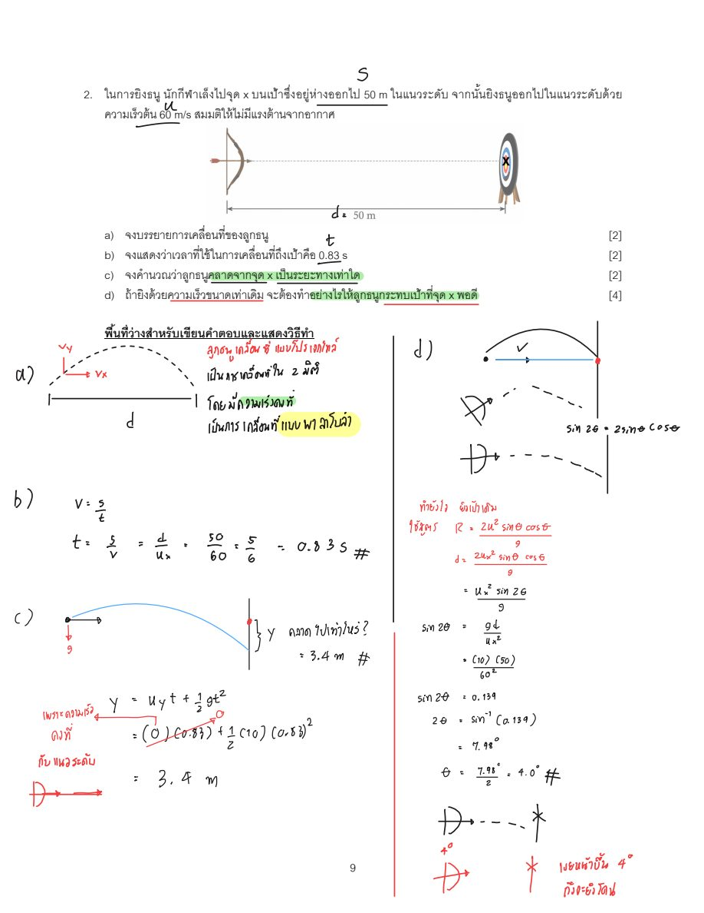

ฝึกทำ · PHY10101 ข้อสอบจำลอง 25 ข้อ + ข้อเขียน (27 ข้อ) โหมดติวเตอร์: ลองคิดเองก่อน → เปิดคำใบ้ทีละระดับ (0 แยกโจทย์ · 1 คำถามนำ · 2 หลักการ · 3 ตัวอย่างคล้ายกัน · 4 เฉลยทีละขั้น · 5 เฉลยเต็ม) → สรุปหลักการ → ทำข้อฝึกใหม่ · ดูหน้าเฉลยเต็มแบบเดิม
1 ข้อ 1. รูปแสดงกราฟระหว่างระยะทาง (Distance) และเวลา (Time) ของการเคลื่อนที่ในแนวเส้นตรงของวัตถุ🖼 ดูรูปโจทย์ต้นฉบับ (mock/h02.jpg) 
ลองทำเองก่อน แล้วค่อยเปิดความช่วยเหลือทีละระดับ
0 · แยกโจทย์: ข้อมูลที่ให้ / สิ่งที่ต้องหา / แนวคิด โจทย์ให้:
กราฟ ก ความชันคงที่ กราฟ ข ความชันเพิ่มขึ้น กราฟ ค ความชันลดลง ต้องหา: กราฟใดแสดงว่าวัตถุมีความเร่ง
แนวคิดที่เกี่ยวข้อง:
ความชันของกราฟ $s$–$t$ คือความเร็ว ความเร่งคืออัตราการเปลี่ยนแปลงความเร็ว 1 · คำถามนำ ความชันของกราฟระยะทาง–เวลาบอกปริมาณอะไร และถ้าความชันไม่คงที่ แปลว่าปริมาณนั้นเป็นอย่างไร?
2 · หลักการที่ควรใช้ ความชันของกราฟ $s$–$t$ คือความเร็ว วัตถุมีความเร่งก็ต่อเมื่อความเร็วเปลี่ยน คือความชันเปลี่ยนไปตามเวลา ลองดูว่ากราฟใดเป็นเส้นตรงและกราฟใดโค้ง
3 · ตัวอย่างคล้ายกัน (เปลี่ยนตัวเลข) โจทย์ตัวอย่าง: กราฟ $s$–$t$ สามกราฟ: ง เป็นเส้นตรงผ่านจุดกำเนิดความชัน 2, จ เป็นเส้นโค้ง $s=t^2$, ฉ เป็นเส้นโค้ง $s=\sqrt{t}$ กราฟใดมีความเร็วคงที่?
สาธิต: เส้นตรงมีความชันเท่ากันทุกจุด ส่วนเส้นโค้งความชันเปลี่ยนไปเรื่อย ๆ จึงแยกกราฟที่ความเร็วเปลี่ยนออกได้ทันทีโดยดูว่าเป็นเส้นตรงหรือไม่
4 · เฉลยทีละขั้น (เปิดเฉพาะขั้นที่ติด)
ขั้นที่ 1 ขั้นตอนที่ 1: ความชันของกราฟระยะทาง–เวลา
ความชันของกราฟ $s$–$t$ คือความเร็ว $v=\dfrac{\Delta s}{\Delta t}$ ถ้าความชันคงที่ แสดงว่าความเร็วคงที่ ความเร่งเป็นศูนย์
ขั้นที่ 2 ขั้นตอนที่ 2: พิจารณาทีละกราฟ
กราฟ ก: เส้นตรง ความชันคงที่ แสดงว่า $v$ คงที่ จึง $a=0$
5 · เฉลยเต็ม + คำตอบ
ขั้นตอนที่ 1: ความชันของกราฟระยะทาง–เวลา
ความชันของกราฟ $s$–$t$ คือความเร็ว $v=\dfrac{\Delta s}{\Delta t}$ ถ้าความชันคงที่ แสดงว่าความเร็วคงที่ ความเร่งเป็นศูนย์
ขั้นตอนที่ 2: พิจารณาทีละกราฟ
กราฟ ก: เส้นตรง ความชันคงที่ แสดงว่า $v$ คงที่ จึง $a=0$
คำตอบ:
ความเร็วเปลี่ยนแปลงในกราฟ ข และ ค
$$\text{ตอบ C. ข และ ค}$$
จุดพลาดที่พบบ่อย:
แนวคิดผิด: เข้าใจว่ากราฟที่ชันมากหรือกราฟที่ลาดขึ้นแปลว่ามีความเร่ง ทั้งที่ความเร่งดูจากการเปลี่ยนของความชัน อ่านโจทย์ผิด: คิดว่ากราฟเป็นกราฟความเร็ว–เวลา ซึ่งความชันจะเป็นความเร่ง สรุปหลักการ
ความชันของกราฟ $s$–$t$ = ความเร็ว เส้นตรง = ความเร็วคงที่ ความเร่งเป็นศูนย์ เส้นโค้ง = ความเร็วเปลี่ยน = มีความเร่ง ข้อฝึกใหม่: กราฟ $s$–$t$ สามกราฟ: ง เป็นเส้นตรง $s=2t$, จ เป็นเส้นโค้ง $s=t^2$, ฉ เป็นเส้นโค้ง $s=\sqrt{t}$ กราฟใดแสดงว่าวัตถุมีความเร็วคงที่ (ความเร่งเป็นศูนย์)?
ใบ้ ดูว่ากราฟใดมีความชันเท่ากันทุกจุด
ดูคำตอบ กราฟ ง เท่านั้น
ความเร็ว $v=\dfrac{ds}{dt}$ ของ ง คือ $2$ คงที่
2 ข้อ 2. รูปแสดงกราฟระหว่างความเร็วและเวลาของการเคลื่อนที่ในแนวเส้นตรงของวัตถุหนึ่งภายในเวลา 7 วินาที: ความเร็วคงที่ 6 m/s ตั้งแต่ $t=0$ ถึง $t=3$ s จากนั้นลดลงเป็นเส้นตรงจนเป็น 0 ที่ $t=7$ s🖼 ดูรูปโจทย์ต้นฉบับ (mock/h02.jpg) ลองทำเองก่อน แล้วค่อยเปิดความช่วยเหลือทีละระดับ
0 · แยกโจทย์: ข้อมูลที่ให้ / สิ่งที่ต้องหา / แนวคิด โจทย์ให้:
$v=6$ m/s คงที่ช่วง 0–3 s ช่วง 3–7 s ความเร็วลดเป็นเส้นตรงจาก 6 เป็น 0 m/s ต้องหา: ระยะทางรวมที่เคลื่อนที่ได้ใน 7 s
แนวคิดที่เกี่ยวข้อง:
พื้นที่ใต้กราฟ $v$–$t$ คือการกระจัด/ระยะทาง แบ่งกราฟเป็นช่วง ๆ แล้วรวมกัน 1 · คำถามนำ พื้นที่ใต้กราฟความเร็ว–เวลาแต่ละช่วงเป็นรูปร่างอะไร และแต่ละช่วงให้ระยะทางเท่าใด?
2 · หลักการที่ควรใช้ ระยะทางหาได้จากพื้นที่ใต้กราฟ $v$–$t$ ช่วงความเร็วคงที่ได้สี่เหลี่ยมผืนผ้า ช่วงความเร็วลดสม่ำเสมอได้สามเหลี่ยม หรือใช้ $s=ut+\tfrac12at^2$ ก็ได้
3 · ตัวอย่างคล้ายกัน (เปลี่ยนตัวเลข) โจทย์ตัวอย่าง: รถวิ่งด้วย 4 m/s นาน 2 s แล้วเร็วขึ้นเป็นเส้นตรงเป็น 10 m/s ในอีก 3 s ระยะทางช่วงที่สองเป็นเท่าใด?
สาธิต: ช่วงที่สองเป็นรูปสี่เหลี่ยมคางหมู ความเร็วเฉลี่ย $=\dfrac{4+10}{2}=7$ m/s คูณเวลา 3 s ได้ระยะทางช่วงนั้น
4 · เฉลยทีละขั้น (เปิดเฉพาะขั้นที่ติด)
ขั้นที่ 1 ขั้นตอนที่ 1: ช่วงความเร็วคงที่ (0–3 s)
$$s_1=vt=6\times3=18\ \text{m}$$
ขั้นที่ 2 ขั้นตอนที่ 2: ช่วงความเร่งคงที่ (3–7 s)
$a=\dfrac{0-6}{7-3}=-1.5\ \text{m/s}^2$, $t=4$ s
$$s_2=ut+\tfrac12at^2=6(4)+\tfrac12(-1.5)(4)^2=24-12=12\ \text{m}$$
(เท่ากับพื้นที่สามเหลี่ยม $\tfrac12\times6\times4=12$ m)
5 · เฉลยเต็ม + คำตอบ
ขั้นตอนที่ 1: ช่วงความเร็วคงที่ (0–3 s)
$$s_1=vt=6\times3=18\ \text{m}$$
ขั้นตอนที่ 2: ช่วงความเร่งคงที่ (3–7 s)
$a=\dfrac{0-6}{7-3}=-1.5\ \text{m/s}^2$, $t=4$ s
$$s_2=ut+\tfrac12at^2=6(4)+\tfrac12(-1.5)(4)^2=24-12=12\ \text{m}$$
(เท่ากับพื้นที่สามเหลี่ยม $\tfrac12\times6\times4=12$ m)
คำตอบ:
$$s=s_1+s_2=18+12=30\ \text{m}$$
ตอบ C. 30 m
จุดพลาดที่พบบ่อย:
แนวคิดผิด: ใช้ $s=vt$ ตลอดทั้ง 7 s ทั้งที่ช่วงหลังความเร็วไม่คงที่ คำนวณผิด: ลืมบวกระยะทางช่วงแรกเข้ากับช่วงหลัง หรือใช้เวลา 7 s แทน 4 s ในช่วงหลัง สรุปหลักการ
ระยะทาง = พื้นที่ใต้กราฟ $v$–$t$ แบ่งช่วงที่รูปร่างต่างกันแล้วบวกกัน ช่วงความเร็วลดสม่ำเสมอใช้ความเร็วเฉลี่ยหรือพื้นที่สามเหลี่ยม ข้อฝึกใหม่: กราฟ $v$–$t$ ของวัตถุ: ความเร็วคงที่ 5 m/s ตั้งแต่ $t=0$ ถึง 4 s แล้วลดลงเป็นเส้นตรงจนเป็น 0 ที่ $t=10$ s ระยะทางรวมเป็นเท่าใด?
ใบ้ แบ่งเป็นสี่เหลี่ยมผืนผ้ากับสามเหลี่ยม
ดูคำตอบ $35\ \text{m}$
ช่วงแรก $s_1=5\times4=20$ m
3 ข้อ 3. ข้อใดกล่าวถูกต้องเกี่ยวกับการเคลื่อนที่แบบโปรเจกไทล์ (ไม่คิดแรงต้านอากาศ)🖼 ดูรูปโจทย์ต้นฉบับ (mock/h02.jpg) ลองทำเองก่อน แล้วค่อยเปิดความช่วยเหลือทีละระดับ
0 · แยกโจทย์: ข้อมูลที่ให้ / สิ่งที่ต้องหา / แนวคิด โจทย์ให้:
วัตถุเคลื่อนที่แบบโปรเจกไทล์ ไม่คิดแรงต้านอากาศ ต้องหา: ข้อความที่ถูกต้องเกี่ยวกับโปรเจกไทล์
แนวคิดที่เกี่ยวข้อง:
แยกแกน x และ y ให้เป็นอิสระต่อกัน แรงเดียวที่กระทำคือน้ำหนัก 1 · คำถามนำ ระหว่างที่วัตถุลอยอยู่ในอากาศ มีแรงใดกระทำและทำให้ความเร่งเป็นอย่างไร?
2 · หลักการที่ควรใช้ ถ้าไม่คิดแรงต้านอากาศ มีเฉพาะน้ำหนัก ความเร่งจึงเป็น $g$ ลงล่างตลอด ส่วนความเร็วแนวระดับไม่เปลี่ยน ลองตรวจทีละตัวเลือกกับข้อเท็จจริงนี้
3 · ตัวอย่างคล้ายกัน (เปลี่ยนตัวเลข) โจทย์ตัวอย่าง: ขว้างลูกบอลขึ้นด้วยความเร็วต้น 20 m/s ทำมุม 60° กับแนวระดับ ความเร็วแนวระดับของลูกบอลที่ตำแหน่งต่าง ๆ ในวิถีเป็นอย่างไร?
สาธิต: $v_x=u\cos\theta=20\cos60^\circ=10$ m/s และไม่มีแรงในแนวระดับ จึงมีค่านี้ตลอดทาง
4 · เฉลยทีละขั้น (เปิดเฉพาะขั้นที่ติด)
ขั้นที่ 1 ขั้นตอนที่ 1: แยกการเคลื่อนที่เป็นสองแกน
แนวระดับ: ไม่มีแรง จึง $a_x=0$ และ $v_x$ คงที่
ขั้นที่ 2 ขั้นตอนที่ 2: ตรวจแต่ละข้อ
A ผิด: ที่จุดสูงสุด $v_y=0$ แต่ยังมี $v_x\neq0$
5 · เฉลยเต็ม + คำตอบ
ขั้นตอนที่ 1: แยกการเคลื่อนที่เป็นสองแกน
แนวระดับ: ไม่มีแรง จึง $a_x=0$ และ $v_x$ คงที่
ขั้นตอนที่ 2: ตรวจแต่ละข้อ
A ผิด: ที่จุดสูงสุด $v_y=0$ แต่ยังมี $v_x\neq0$
คำตอบ:
ตอบ B. วัตถุมีความเร่งคงที่ ($a=g=10\ \text{m/s}^2$ ทิศลง)
จุดพลาดที่พบบ่อย:
แนวคิดผิด: คิดว่าที่จุดสูงสุดความเร็วเป็นศูนย์ทั้งหมด ทั้งที่ศูนย์เฉพาะแนวดิ่ง แนวคิดผิด: คิดว่าความเร่งเป็นศูนย์ที่จุดสูงสุด สรุปหลักการ
โปรเจกไทล์: $a_x=0$, $a_y=-g$ ความเร่งคงที่ตลอดวิถี ที่จุดสูงสุด $v_y=0$ แต่ $v_x$ ยังอยู่ ข้อฝึกใหม่: ยิงวัตถุด้วยความเร็ว 20 m/s ทำมุม 60° กับแนวระดับ (ไม่คิดแรงต้านอากาศ, $g=10$ m/s²) ที่จุดสูงสุด อัตราเร็วและความเร่งของวัตถุเป็นเท่าใด?
ใบ้ ที่จุดสูงสุดเหลือเฉพาะองค์ประกอบแนวระดับของความเร็ว
ดูคำตอบ อัตราเร็ว $10\ \text{m/s}$ และความเร่ง $10\ \text{m/s}^2$ ทิศลง
$v_x=20\cos60^\circ=10$ m/s คงที่
4 ข้อ 4. อนุภาคเคลื่อนที่ในแนวเส้นตรงมีระยะทาง $x$ (หน่วยเซนติเมตร) เป็นฟังก์ชันของเวลา $t$ (หน่วยวินาที) ตามสมการ $x=6t^3-3t^2+3t$ ข้อใดคือความเร็วของอนุภาคที่เวลา $t=2.0$ s🖼 ดูรูปโจทย์ต้นฉบับ (mock/h02.jpg) ลองทำเองก่อน แล้วค่อยเปิดความช่วยเหลือทีละระดับ
0 · แยกโจทย์: ข้อมูลที่ให้ / สิ่งที่ต้องหา / แนวคิด โจทย์ให้:
$x=6t^3-3t^2+3t$ (cm) $t=2.0$ s ต้องหา: ความเร็วที่ $t=2.0$ s
แนวคิดที่เกี่ยวข้อง:
$v=\dfrac{dx}{dt}$ อนุพันธ์ของ $t^n$ คือ $nt^{n-1}$ 1 · คำถามนำ ถ้ารู้ตำแหน่งเป็นฟังก์ชันของเวลา เราจะได้ความเร็วจากตำแหน่งนั้นด้วยการทำอะไร?
2 · หลักการที่ควรใช้ ความเร็วขณะหนึ่งคืออนุพันธ์ของตำแหน่งเทียบเวลา ให้หาอนุพันธ์ก่อน แล้วค่อยแทนค่า $t$ และเช็กหน่วยให้เป็น cm/s
3 · ตัวอย่างคล้ายกัน (เปลี่ยนตัวเลข) โจทย์ตัวอย่าง: อนุภาคมี $x=4t^2+t$ (m) ความเร็วที่ $t=3$ s เป็นเท่าใด?
สาธิต: $v=\dfrac{dx}{dt}=8t+1$ แล้วแทนค่า $t$ ที่โจทย์กำหนด
4 · เฉลยทีละขั้น (เปิดเฉพาะขั้นที่ติด)
ขั้นที่ 1 ขั้นตอนที่ 1: หาอนุพันธ์ของ $x$
ความเร็วคืออัตราการเปลี่ยนตำแหน่ง $v=\dfrac{dx}{dt}$
$$v=18t^2-6t+3\ \text{cm/s}$$
ขั้นที่ 2 ขั้นตอนที่ 2: แทน $t=2$
$$v=18(4)-6(2)+3=72-12+3=63\ \text{cm/s}$$
5 · เฉลยเต็ม + คำตอบ
ขั้นตอนที่ 1: หาอนุพันธ์ของ $x$
ความเร็วคืออัตราการเปลี่ยนตำแหน่ง $v=\dfrac{dx}{dt}$
$$v=18t^2-6t+3\ \text{cm/s}$$
ขั้นตอนที่ 2: แทน $t=2$
$$v=18(4)-6(2)+3=72-12+3=63\ \text{cm/s}$$
จุดพลาดที่พบบ่อย:
ใช้สูตรผิด: แทน $t=2$ ลงใน $x$ ได้ตำแหน่งแทนที่จะเป็นความเร็ว คำนวณผิด: หาอนุพันธ์ผิด เช่น ลืมคูณเลขชี้กำลังหรือลืมพจน์ $3t$ สรุปหลักการ
$v=\dfrac{dx}{dt}$ หาอนุพันธ์ก่อนแล้วจึงแทนค่าเวลา ใช้หน่วยเดียวกับโจทย์ (cm/s) ข้อฝึกใหม่: อนุภาคเคลื่อนที่ในแนวเส้นตรงตามสมการ $x=2t^3-5t^2+4t$ (cm, $t$ เป็นวินาที) ความเร็วที่ $t=3$ s เป็นเท่าใด?
ใบ้ หา $\dfrac{dx}{dt}$ ก่อน
ดูคำตอบ $28\ \text{cm/s}$
$v=\dfrac{dx}{dt}=6t^2-10t+4$
5 ข้อ 5. รถยนต์คันหนึ่งเคลื่อนที่ด้วยความเร็ว 20 m/s เมื่อเริ่มเบรกด้วยความเร่งคงที่ หลังจากเคลื่อนที่ไปได้ 64 m ความเร็วลดลงเหลือ 12 m/s ข้อใดคือความเร่งของรถ🖼 ดูรูปโจทย์ต้นฉบับ (mock/h02.jpg) ลองทำเองก่อน แล้วค่อยเปิดความช่วยเหลือทีละระดับ
0 · แยกโจทย์: ข้อมูลที่ให้ / สิ่งที่ต้องหา / แนวคิด โจทย์ให้:
$u=20$ m/s $v=12$ m/s $s=64$ m ต้องหา: ความเร่งของรถ $a$
แนวคิดที่เกี่ยวข้อง:
สมการการเคลื่อนที่ความเร่งคงที่ เลือกสูตรที่ไม่มีเวลาเมื่อโจทย์ไม่ให้เวลา 1 · คำถามนำ โจทย์ให้ปริมาณใดบ้าง และไม่ได้ให้เวลา สูตรใดที่ไม่ต้องใช้ $t$?
2 · หลักการที่ควรใช้ ความเร่งคงที่ ใช้ $v^2=u^2+2as$ ได้เมื่อรู้ $u$, $v$, $s$ ย้ายข้างหา $a$ ระวังเครื่องหมายเพราะรถกำลังเบรก
3 · ตัวอย่างคล้ายกัน (เปลี่ยนตัวเลข) โจทย์ตัวอย่าง: รถเริ่มจาก 10 m/s เร่งสม่ำเสมอ ไปได้ 40 m ความเร็วเป็น 14 m/s ความเร่งเท่าใด?
สาธิต: $v^2=u^2+2as\Rightarrow a=\dfrac{v^2-u^2}{2s}$ แล้วแทนค่าตามโจทย์
4 · เฉลยทีละขั้น (เปิดเฉพาะขั้นที่ติด)
ขั้นที่ 1 ขั้นตอนที่ 1: เลือกสูตร
รู้ $u=20$, $v=12$, $s=64$ ต้องการ $a$ ไม่มีเวลา จึงใช้ $v^2=u^2+2as$
ขั้นที่ 2 ขั้นตอนที่ 2: แทนค่า
$$12^2=20^2+2a(64)\Rightarrow 144=400+128a$$$$a=\dfrac{144-400}{128}=-2.0\ \text{m/s}^2$$
5 · เฉลยเต็ม + คำตอบ
ขั้นตอนที่ 1: เลือกสูตร
รู้ $u=20$, $v=12$, $s=64$ ต้องการ $a$ ไม่มีเวลา จึงใช้ $v^2=u^2+2as$
ขั้นตอนที่ 2: แทนค่า
$$12^2=20^2+2a(64)\Rightarrow 144=400+128a$$$$a=\dfrac{144-400}{128}=-2.0\ \text{m/s}^2$$
คำตอบ:
ตอบ B. $-2.0\ \text{m/s}^2$ (เครื่องหมายลบแสดงว่าลดความเร็ว)
จุดพลาดที่พบบ่อย:
ใช้สูตรผิด: ใช้ $v=u+at$ ทั้งที่ไม่รู้ $t$ คำนวณผิด: ตอบค่าบวกทั้งที่ความเร็วลดลง สรุปหลักการ
ไม่มีเวลา ใช้ $v^2=u^2+2as$ ความเร็วลด ความเร่งเป็นลบ แทนค่าให้ครบก่อนย้ายข้าง ข้อฝึกใหม่: รถวิ่งด้วย 25 m/s แล้วเบรกด้วยความเร่งคงที่ เมื่อไปได้ 50 m ความเร็วเหลือ 15 m/s ความเร่งเป็นเท่าใด?
ใบ้ ใช้สูตรที่ไม่มีเวลา
ดูคำตอบ $-4.0\ \text{m/s}^2$
$a=\dfrac{v^2-u^2}{2s}=\dfrac{15^2-25^2}{2(50)}=\dfrac{225-625}{100}=-4.0$ m/s²
6 ข้อ 6. รูปแสดงการยิงโปรเจกไทล์ด้วยความเร็วต้นขนาด $u=8.00$ m/s ถ้าเลือกมุมยิงเพื่อให้ได้ Range มากที่สุด ข้อใดคือค่าของ Range และ Time of flight ตามลำดับ ($g=10$ m/s²)🖼 ดูรูปโจทย์ต้นฉบับ (mock/h03.jpg) 
ลองทำเองก่อน แล้วค่อยเปิดความช่วยเหลือทีละระดับ
0 · แยกโจทย์: ข้อมูลที่ให้ / สิ่งที่ต้องหา / แนวคิด โจทย์ให้:
$u=8.00$ m/s เลือกมุมให้ Range มากสุด $g=10$ m/s² ต้องหา: Range และ Time of flight
แนวคิดที่เกี่ยวข้อง:
$R=\dfrac{2u^2\sin\theta\cos\theta}{g}$ $T=\dfrac{2u\sin\theta}{g}$ 1 · คำถามนำ Range จะมากที่สุดเมื่อยิงที่มุมกี่องศา?
2 · หลักการที่ควรใช้ $R\propto\sin2\theta$ จึงมากสุดเมื่อ $\sin2\theta=1$ เมื่อได้มุมแล้วนำไปแทนในสูตร $R$ และ $T$ ที่ให้มาในสูตรประกอบ ตั้งเครื่องคิดเลขเป็นโหมดองศา
3 · ตัวอย่างคล้ายกัน (เปลี่ยนตัวเลข) โจทย์ตัวอย่าง: ยิงด้วยความเร็วต้น 12 m/s ที่มุม 30° ค่า $T=\dfrac{2u\sin\theta}{g}$ เป็นเท่าใด?
สาธิต: $T=\dfrac{2(12)\sin30^\circ}{10}$ ซึ่งเป็นการแทนค่าตรง ๆ ตามสูตร
4 · เฉลยทีละขั้น (เปิดเฉพาะขั้นที่ติด)
ขั้นที่ 1 ขั้นตอนที่ 1: มุมที่ให้ Range มากที่สุด
$R=\dfrac{2u^2\sin\theta\cos\theta}{g}=\dfrac{u^2\sin2\theta}{g}$ มากที่สุดเมื่อ $\theta=45^\circ$
ขั้นที่ 2 ขั้นตอนที่ 2: Range
$$R=\dfrac{2(8)^2\sin45^\circ\cos45^\circ}{10}=\dfrac{64}{10}=6.40\ \text{m}$$
ขั้นที่ 3 ขั้นตอนที่ 3: Time of flight
$$T=\dfrac{2u\sin\theta}{g}=\dfrac{2(8)\sin45^\circ}{10}=1.13\ \text{s}$$
5 · เฉลยเต็ม + คำตอบ
ขั้นตอนที่ 1: มุมที่ให้ Range มากที่สุด
$R=\dfrac{2u^2\sin\theta\cos\theta}{g}=\dfrac{u^2\sin2\theta}{g}$ มากที่สุดเมื่อ $\theta=45^\circ$
ขั้นตอนที่ 2: Range
$$R=\dfrac{2(8)^2\sin45^\circ\cos45^\circ}{10}=\dfrac{64}{10}=6.40\ \text{m}$$
ขั้นตอนที่ 3: Time of flight
$$T=\dfrac{2u\sin\theta}{g}=\dfrac{2(8)\sin45^\circ}{10}=1.13\ \text{s}$$
คำตอบ:
ตอบ A. 6.40 m และ 1.13 s
จุดพลาดที่พบบ่อย:
คำนวณผิด: ตั้งเครื่องคิดเลขเป็นเรเดียนแทนองศา แนวคิดผิด: คิดว่ามุม 90° ให้ Range มากที่สุด สรุปหลักการ
Range มากสุดที่ $45^\circ$ $R=\dfrac{u^2}{g}$ เมื่อ $\theta=45^\circ$ $T=\dfrac{2u\sin\theta}{g}$ ข้อฝึกใหม่: ยิงโปรเจกไทล์ด้วยความเร็วต้น 20 m/s เลือกมุมให้ Range มากที่สุด ($g=10$ m/s²) จงหา Range และ Time of flight
ใบ้ มุมที่ให้ Range มากสุดคือ 45°
ดูคำตอบ $R=40\ \text{m}$, $T=2\sqrt2\approx2.83\ \text{s}$
$R=\dfrac{u^2}{g}=\dfrac{400}{10}=40$ m
7 ข้อ 7. จากสถานการณ์ในข้อ 6 (ยิงด้วย $u=8.00$ m/s ที่มุม 45°) วัตถุขึ้นไปได้สูงสุดจากพื้นเป็นระยะทางเท่าใด ($g=10$ m/s²)🖼 ดูรูปโจทย์ต้นฉบับ (mock/h03.jpg) ลองทำเองก่อน แล้วค่อยเปิดความช่วยเหลือทีละระดับ
0 · แยกโจทย์: ข้อมูลที่ให้ / สิ่งที่ต้องหา / แนวคิด โจทย์ให้:
$u=8.00$ m/s, $\theta=45^\circ$ $g=10$ m/s² ต้องหา: ความสูงสูงสุด $h$
แนวคิดที่เกี่ยวข้อง:
แยกความเร็วเป็นแนวดิ่ง ที่จุดสูงสุด $v_y=0$ 1 · คำถามนำ ที่จุดสูงสุดความเร็วในแนวดิ่งมีค่าเท่าใด และความเร็วต้นแนวดิ่งหาได้อย่างไร?
2 · หลักการที่ควรใช้ พิจารณาเฉพาะแนวดิ่ง เป็นการเคลื่อนที่ความเร่งคงที่ $a=-g$ ใช้ $v^2=u^2+2as$ โดยให้ $v_y=0$ และ $u_y=u\sin\theta$
3 · ตัวอย่างคล้ายกัน (เปลี่ยนตัวเลข) โจทย์ตัวอย่าง: ขว้างลูกบอลขึ้นตรง ๆ ด้วย 10 m/s จะขึ้นสูงสุดเท่าใด?
สาธิต: $0=10^2+2(-10)h$ จึงแก้สมการหา $h$ ได้ทันที
4 · เฉลยทีละขั้น (เปิดเฉพาะขั้นที่ติด)
ขั้นที่ 1 ขั้นตอนที่ 1: ความเร็วแนวดิ่งเริ่มต้น
$$u_y=u\sin45^\circ=8\times0.7071=5.66\ \text{m/s}$$
ขั้นที่ 2 ขั้นตอนที่ 2: ที่จุดสูงสุด $v_y=0$
$$v_y^2=u_y^2+2a h\Rightarrow 0=(5.66)^2+2(-10)h$$$$h=\dfrac{32}{20}=1.6\ \text{m}$$
5 · เฉลยเต็ม + คำตอบ
ขั้นตอนที่ 1: ความเร็วแนวดิ่งเริ่มต้น
$$u_y=u\sin45^\circ=8\times0.7071=5.66\ \text{m/s}$$
ขั้นตอนที่ 2: ที่จุดสูงสุด $v_y=0$
$$v_y^2=u_y^2+2a h\Rightarrow 0=(5.66)^2+2(-10)h$$$$h=\dfrac{32}{20}=1.6\ \text{m}$$
จุดพลาดที่พบบ่อย:
ใช้สูตรผิด: ใส่ $u$ ทั้งหมดแทน $u_y$ คำนวณผิด: ลืมว่า $a=-g$ ทำให้เครื่องหมายผิด สรุปหลักการ
แยกแกนดิ่งก่อน จุดสูงสุด $v_y=0$ $h=\dfrac{(u\sin\theta)^2}{2g}$ ข้อฝึกใหม่: ยิงวัตถุด้วยความเร็ว 20 m/s ทำมุม 30° กับแนวระดับ ($g=10$ m/s²) ขึ้นสูงสุดจากพื้นเท่าใด?
ใบ้ ใช้ $u_y=u\sin30^\circ$
ดูคำตอบ $5\ \text{m}$
$u_y=20\sin30^\circ=10$ m/s
8 ข้อ 8. ในการเคลื่อนที่แบบวงกลมในแนวระดับด้วยอัตราเร็วคงที่ เวกเตอร์ P (ชี้เข้าหาจุดศูนย์กลาง) และ Q (สัมผัสวงกลม) แสดงปริมาณอะไรตามลำดับ🖼 ดูรูปโจทย์ต้นฉบับ (mock/h03.jpg) ลองทำเองก่อน แล้วค่อยเปิดความช่วยเหลือทีละระดับ
0 · แยกโจทย์: ข้อมูลที่ให้ / สิ่งที่ต้องหา / แนวคิด โจทย์ให้:
วงกลมในแนวระดับ อัตราเร็วคงที่ P ชี้เข้าสู่ศูนย์กลาง Q สัมผัสวงกลม ต้องหา: P และ Q คือปริมาณใด
แนวคิดที่เกี่ยวข้อง:
ความเร็วสัมผัสวงกลม ความเร่งเข้าสู่ศูนย์กลาง $a_c=v^2/r$ 1 · คำถามนำ วัตถุกำลังเคลื่อนที่ไปทางใด ณ ขณะหนึ่ง และความเร็วเชิงเส้นชี้ไปทางนั้นหรือเปล่า?
2 · หลักการที่ควรใช้ ความเร็วขณะหนึ่งชี้แนวสัมผัสวิถี ส่วนความเร่งในการเคลื่อนที่วงกลมสม่ำเสมอชี้เข้าสู่ศูนย์กลาง ความเร็วเชิงมุมไม่ได้วาดเป็นลูกศรในระนาบวงกลมแบบนี้
3 · ตัวอย่างคล้ายกัน (เปลี่ยนตัวเลข) โจทย์ตัวอย่าง: ก้อนหินผูกเชือกหมุนเป็นวงกลมแนวระดับด้วยอัตราเร็วคงที่ ถ้าเชือกขาด ก้อนหินพุ่งไปทิศใด?
สาธิต: ณ ขณะที่เชือกขาด ก้อนหินยังมีความเร็วในทิศสัมผัสวงกลม และไม่มีแรงดึงเข้า จึงเคลื่อนต่อไปตามแนวนั้น
4 · เฉลยทีละขั้น (เปิดเฉพาะขั้นที่ติด)
ขั้นที่ 1 ขั้นตอนที่ 1: เวกเตอร์ที่สัมผัสวงกลม
ความเร็วชี้ตามทิศการเคลื่อนที่ ซึ่งเป็นแนวสัมผัสวงกลม ดังนั้น Q คือความเร็ว
ขั้นที่ 2 ขั้นตอนที่ 2: เวกเตอร์ที่ชี้เข้าศูนย์กลาง
อัตราเร็วคงที่ แต่ทิศความเร็วเปลี่ยน จึงมีความเร่งเข้าสู่ศูนย์กลาง $a_c=\dfrac{v^2}{r}$ ดังนั้น P คือความเร่ง
5 · เฉลยเต็ม + คำตอบ
ขั้นตอนที่ 1: เวกเตอร์ที่สัมผัสวงกลม
ความเร็วชี้ตามทิศการเคลื่อนที่ ซึ่งเป็นแนวสัมผัสวงกลม ดังนั้น Q คือความเร็ว
ขั้นตอนที่ 2: เวกเตอร์ที่ชี้เข้าศูนย์กลาง
อัตราเร็วคงที่ แต่ทิศความเร็วเปลี่ยน จึงมีความเร่งเข้าสู่ศูนย์กลาง $a_c=\dfrac{v^2}{r}$ ดังนั้น P คือความเร่ง
คำตอบ:
P = ความเร่ง, Q = ความเร็ว ตอบ C
จุดพลาดที่พบบ่อย:
แนวคิดผิด: คิดว่าอัตราเร็วคงที่แปลว่าไม่มีความเร่ง แนวคิดผิด: สับสนระหว่างความเร็ว (สัมผัส) กับความเร่ง (เข้าสู่ศูนย์กลาง) สรุปหลักการ
ความเร็ว สัมผัสวงกลม ความเร่ง ชี้เข้าสู่ศูนย์กลาง อัตราเร็วคงที่ แต่เวกเตอร์ความเร็วเปลี่ยนทิศ ข้อฝึกใหม่: วัตถุเคลื่อนที่เป็นวงกลมรัศมี 3.0 m ด้วยอัตราเร็วคงที่ 6.0 m/s จงหาขนาดและทิศของความเร่ง
ใบ้ ใช้ $a_c=\dfrac{v^2}{r}$
ดูคำตอบ $12\ \text{m/s}^2$ ชี้เข้าสู่ศูนย์กลาง
$a_c=\dfrac{v^2}{r}=\dfrac{6^2}{3}=12$ m/s²
9 ข้อ 9. กล่องใบหนึ่งมวล $m=15$ kg วางนิ่งอยู่บนพื้นเอียง (มุม $\theta=33^\circ$) โดยมีเชือกผูกติดกับกำแพง สมมติให้พื้นผิวไม่มีความเสียดทาน เมื่อตัดเชือกออก ข้อใดคือค่าความเร่งของกล่อง ($g=10$ m/s²)🖼 ดูรูปโจทย์ต้นฉบับ (mock/h03.jpg) ลองทำเองก่อน แล้วค่อยเปิดความช่วยเหลือทีละระดับ
0 · แยกโจทย์: ข้อมูลที่ให้ / สิ่งที่ต้องหา / แนวคิด โจทย์ให้:
$m=15$ kg $\theta=33^\circ$ ไม่มีแรงเสียดทาน, ตัดเชือกออก ต้องหา: ความเร่งของกล่อง
แนวคิดที่เกี่ยวข้อง:
แยกน้ำหนักเป็นแนวขนานและตั้งฉากพื้นเอียง $\sum F=ma$ 1 · คำถามนำ หลังตัดเชือก แรงใดบ้างที่มีองค์ประกอบตามแนวพื้นเอียง?
2 · หลักการที่ควรใช้ แรงปฏิกิริยาตั้งฉากกับพื้นผิวไม่มีองค์ประกอบตามพื้น จึงเหลือองค์ประกอบของน้ำหนักตามพื้นเอียงเท่านั้น ใช้ $\sum F=ma$ ตามแนวพื้นเอียง และสังเกตว่ามวลตัดกันได้
3 · ตัวอย่างคล้ายกัน (เปลี่ยนตัวเลข) โจทย์ตัวอย่าง: ลูกบอลมวล 2 kg กลิ้งลงพื้นเอียงลื่นมุม 20° ความเร่งเขียนเป็นสูตรได้อย่างไร?
สาธิต: $mg\sin20^\circ=ma$ ตัด $m$ ออกได้ แล้วคำนวณ $g\sin20^\circ$ โดยไม่ต้องใช้ค่ามวล
4 · เฉลยทีละขั้น (เปิดเฉพาะขั้นที่ติด)
ขั้นที่ 1 ขั้นตอนที่ 1: แรงตามแนวพื้นเอียง
เมื่อตัดเชือก แรงที่ทำให้กล่องเคลื่อนที่ตามพื้นเอียงมีเพียงองค์ประกอบของน้ำหนัก $mg\sin\theta$ (ไม่มีเสียดทาน)
ขั้นที่ 2 ขั้นตอนที่ 2: กฎข้อสองของนิวตัน
$$mg\sin\theta=ma\Rightarrow a=g\sin\theta=10\sin33^\circ$$$$a=10(0.5446)=5.4\ \text{m/s}^2$$
(มวลหักล้างกันได้)
5 · เฉลยเต็ม + คำตอบ
ขั้นตอนที่ 1: แรงตามแนวพื้นเอียง
เมื่อตัดเชือก แรงที่ทำให้กล่องเคลื่อนที่ตามพื้นเอียงมีเพียงองค์ประกอบของน้ำหนัก $mg\sin\theta$ (ไม่มีเสียดทาน)
ขั้นตอนที่ 2: กฎข้อสองของนิวตัน
$$mg\sin\theta=ma\Rightarrow a=g\sin\theta=10\sin33^\circ$$$$a=10(0.5446)=5.4\ \text{m/s}^2$$
(มวลหักล้างกันได้)
จุดพลาดที่พบบ่อย:
ใช้สูตรผิด: ใช้ $g\cos\theta$ แทน $g\sin\theta$ แนวคิดผิด: นำมวล 15 kg มาคำนวณทั้งที่ตัดกันได้ หรือใช้แรงตึงเชือกต่อทั้งที่ตัดแล้ว สรุปหลักการ
ตามพื้นเอียง ใช้ $mg\sin\theta$ ไม่มีเสียดทาน: $a=g\sin\theta$ ความเร่งไม่ขึ้นกับมวล ข้อฝึกใหม่: บล็อกมวล 8 kg อยู่บนพื้นเอียงลื่นมุม 30° ถูกปล่อยจากนิ่ง ($g=10$ m/s²) ความเร่งของบล็อกเป็นเท่าใด?
ใบ้ $a=g\sin\theta$
ดูคำตอบ $5.0\ \text{m/s}^2$
$ma=mg\sin30^\circ$
10 ข้อ 10. เครื่อง Centrifuge เครื่องหนึ่งสามารถหมุนได้ความเร็วสูงสุด 5,000 รอบต่อนาที ข้อใดคือค่าคาบของการหมุน🖼 ดูรูปโจทย์ต้นฉบับ (mock/h03.jpg) ลองทำเองก่อน แล้วค่อยเปิดความช่วยเหลือทีละระดับ
0 · แยกโจทย์: ข้อมูลที่ให้ / สิ่งที่ต้องหา / แนวคิด โจทย์ให้:
ต้องหา: คาบการหมุน $T$
แนวคิดที่เกี่ยวข้อง:
$T=\dfrac1f$ แปลงหน่วยรอบ/นาที เป็น Hz 1 · คำถามนำ ความถี่ที่ใช้ในสูตรคาบต้องมีหน่วยอะไร และ 5,000 รอบต่อนาที เทียบเป็นต่อวินาทีได้เท่าใด?
2 · หลักการที่ควรใช้ คาบคือเวลาที่หมุนครบหนึ่งรอบ $T=1/f$ โดยต้องใช้ $f$ ในหน่วยรอบต่อวินาที (Hz) แปลงหน่วยก่อนค่อยกลับค่า
3 · ตัวอย่างคล้ายกัน (เปลี่ยนตัวเลข) โจทย์ตัวอย่าง: พัดลมหมุน 1,200 รอบต่อนาที ความถี่กี่ Hz?
สาธิต: $f=\dfrac{1200}{60}$ Hz จากนั้นนำ $\dfrac1f$ จะได้คาบ
4 · เฉลยทีละขั้น (เปิดเฉพาะขั้นที่ติด)
ขั้นที่ 1 ขั้นตอนที่ 1: แปลงเป็นความถี่ (Hz)
$$f=5000\ \text{รอบ/นาที}\times\dfrac{1\ \text{นาที}}{60\ \text{s}}=83.33\ \text{Hz}$$
ขั้นที่ 2 ขั้นตอนที่ 2: คาบ
$$T=\dfrac1f=\dfrac1{83.33}=0.012=1.2\times10^{-2}\ \text{s}$$
5 · เฉลยเต็ม + คำตอบ
ขั้นตอนที่ 1: แปลงเป็นความถี่ (Hz)
$$f=5000\ \text{รอบ/นาที}\times\dfrac{1\ \text{นาที}}{60\ \text{s}}=83.33\ \text{Hz}$$
ขั้นตอนที่ 2: คาบ
$$T=\dfrac1f=\dfrac1{83.33}=0.012=1.2\times10^{-2}\ \text{s}$$
คำตอบ:
ตอบ B. $1.2\times10^{-2}$ s
จุดพลาดที่พบบ่อย:
คำนวณผิด: ลืมแปลงนาทีเป็นวินาที ทำให้ได้คาบเป็น $2\times10^{-4}$ (หน่วยเป็นนาที) ใช้สูตรผิด: สับสน $T=f$ หรือ $T=1/\omega$ สรุปหลักการ
$T=\dfrac1f$ รอบ/นาที ÷ 60 = Hz ตรวจหน่วยทุกครั้ง ข้อฝึกใหม่: มอเตอร์หมุน 3,000 รอบต่อนาที จงหาความถี่และคาบของการหมุน
ใบ้ หารด้วย 60 ก่อน
ดูคำตอบ $f=50\ \text{Hz}$, $T=0.020\ \text{s}$
$f=\dfrac{3000}{60}=50$ Hz
11 ข้อ 11. รูปแสดงรถวิ่งวนบนรางวงกลมในแนวดิ่ง (ที่จุดต่ำสุดและสูงสุดมีแรง N จากราง ชี้เข้าสู่ศูนย์กลาง) แรงในข้อใดทำหน้าที่เป็นแรงเข้าสู่ศูนย์กลาง🖼 ดูรูปโจทย์ต้นฉบับ (mock/h04.jpg) 
ลองทำเองก่อน แล้วค่อยเปิดความช่วยเหลือทีละระดับ
0 · แยกโจทย์: ข้อมูลที่ให้ / สิ่งที่ต้องหา / แนวคิด โจทย์ให้:
รถวิ่งวนบนรางวงกลมแนวดิ่ง แรง $N$ จากรางชี้เข้าสู่ศูนย์กลาง ต้องหา: แรงใดทำหน้าที่เป็นแรงเข้าสู่ศูนย์กลาง
แนวคิดที่เกี่ยวข้อง:
แรงเข้าสู่ศูนย์กลางเป็นแรงลัพธ์ที่ชี้เข้าสู่ศูนย์กลาง ไม่ใช่แรงชนิดใหม่ แรงปฏิกิริยาตั้งฉากจากผิวสัมผัส 1 · คำถามนำ แรงเข้าสู่ศูนย์กลางชี้ไปทางใด และแรงใดบ้างในตัวเลือกที่ชี้ไปทางนั้นจริง?
2 · หลักการที่ควรใช้ แรงเข้าสู่ศูนย์กลางไม่ใช่แรงชนิดใหม่ แต่เป็นแรงจริงที่ชี้เข้าสู่ศูนย์กลาง ให้ดูว่าแรงใดกระทำต่อรถและชี้เข้าหาศูนย์กลาง
3 · ตัวอย่างคล้ายกัน (เปลี่ยนตัวเลข) โจทย์ตัวอย่าง: ก้อนหินผูกเชือกหมุนเป็นวงกลมบนโต๊ะลื่น แรงใดทำหน้าที่เป็นแรงเข้าสู่ศูนย์กลาง?
สาธิต: มีแรงเดียวในแนวระดับที่ชี้เข้าสู่ศูนย์กลาง คือแรงที่เชือกดึงก้อนหิน
4 · เฉลยทีละขั้น (เปิดเฉพาะขั้นที่ติด)
ขั้นที่ 1 ขั้นตอนที่ 1: ทิศของแรงเข้าสู่ศูนย์กลาง
แรงเข้าสู่ศูนย์กลางต้องชี้จากรถเข้าหาจุดศูนย์กลางวงกลม
ขั้นที่ 2 ขั้นตอนที่ 2: เปรียบเทียบตัวเลือก
แรงเสียดทานและแรงจากเครื่องยนต์ชี้ตามแนวสัมผัส แรงต้านอากาศสวนทางการเคลื่อนที่ ส่วนแรงเหวี่ยงไม่ใช่แรงจริงจากการกระทำของวัตถุอื่น แรงปฏิกิริยาตั้งฉากจากรางชี้เข้าสู่ศูนย์กลาง
5 · เฉลยเต็ม + คำตอบ
ขั้นตอนที่ 1: ทิศของแรงเข้าสู่ศูนย์กลาง
แรงเข้าสู่ศูนย์กลางต้องชี้จากรถเข้าหาจุดศูนย์กลางวงกลม
ขั้นตอนที่ 2: เปรียบเทียบตัวเลือก
แรงเสียดทานและแรงจากเครื่องยนต์ชี้ตามแนวสัมผัส แรงต้านอากาศสวนทางการเคลื่อนที่ ส่วนแรงเหวี่ยงไม่ใช่แรงจริงจากการกระทำของวัตถุอื่น แรงปฏิกิริยาตั้งฉากจากรางชี้เข้าสู่ศูนย์กลาง
คำตอบ:
ตอบ C. แรงที่รางกระทำต่อรถ (แรงปฏิกิริยาตั้งฉาก $N$)
จุดพลาดที่พบบ่อย:
แนวคิดผิด: ตอบแรงเหวี่ยง ทั้งที่ไม่ใช่แรงจริงที่กระทำต่อวัตถุ แนวคิดผิด: ถือว่าแรงเข้าสู่ศูนย์กลางเป็นแรงเพิ่มจากแรงจริงอื่น สรุปหลักการ
แรงเข้าสู่ศูนย์กลางเป็นแรงลัพธ์ที่ชี้เข้าสู่ศูนย์กลาง เกิดจากแรงจริง เช่น แรงตึงเชือก แรงตั้งฉาก แรงโน้มถ่วง แรงเหวี่ยงไม่ใช่แรงจริงในกรอบนิ่ง ข้อฝึกใหม่: ดวงจันทร์โคจรรอบโลกเป็นวงกลม แรงใดทำหน้าที่เป็นแรงเข้าสู่ศูนย์กลาง?
ใบ้ ดูแรงที่โลกกระทำต่อดวงจันทร์
ดูคำตอบ แรงโน้มถ่วงที่โลกดึงดูดดวงจันทร์
ดวงจันทร์ถูกแรงโน้มถ่วงของโลกดึงเข้าหาโลก ซึ่งชี้เข้าสู่ศูนย์กลางวงโคจร จึงเป็นแรงเข้าสู่ศูนย์กลาง
12 ข้อ 12. ลูกตุ้มมีมวล 1.0 kg เคลื่อนที่เป็นวงกลมด้วยอัตราเร็ว 10 m/s และวงกลมมีรัศมี 1.0 m ข้อใดคือขนาดของแรงเข้าสู่ศูนย์กลาง🖼 ดูรูปโจทย์ต้นฉบับ (mock/h04.jpg) ลองทำเองก่อน แล้วค่อยเปิดความช่วยเหลือทีละระดับ
0 · แยกโจทย์: ข้อมูลที่ให้ / สิ่งที่ต้องหา / แนวคิด โจทย์ให้:
$m=1.0$ kg $v=10$ m/s $r=1.0$ m ต้องหา: ขนาดแรงเข้าสู่ศูนย์กลาง $F_c$
แนวคิดที่เกี่ยวข้อง:
$a_c=\dfrac{v^2}{r}$ $F_c=ma_c$ 1 · คำถามนำ แรงเข้าสู่ศูนย์กลางหาได้จากมวลคูณปริมาณใด และปริมาณนั้นใช้ $v$ กับ $r$ อย่างไร?
2 · หลักการที่ควรใช้ ใช้กฎข้อสอง $F=ma$ โดย $a$ คือความเร่งเข้าสู่ศูนย์กลาง $v^2/r$ ระวังกำลังสองของ $v$ ก่อนหารด้วย $r$
3 · ตัวอย่างคล้ายกัน (เปลี่ยนตัวเลข) โจทย์ตัวอย่าง: วัตถุ 0.5 kg เคลื่อนที่เป็นวงกลมรัศมี 2 m ด้วยอัตราเร็ว 4 m/s ความเร่งเข้าสู่ศูนย์กลางหาได้อย่างไร?
สาธิต: $a_c=\dfrac{v^2}{r}=\dfrac{4^2}{2}$ แล้วคูณมวลเพื่อหาแรง
4 · เฉลยทีละขั้น (เปิดเฉพาะขั้นที่ติด)
ขั้นที่ 1 ขั้นตอนที่ 1: สูตร
$a_c=\dfrac{v^2}{r}$ และ $F_c=ma_c=\dfrac{mv^2}{r}$
ขั้นที่ 2 ขั้นตอนที่ 2: แทนค่า
$$F_c=\dfrac{(1.0)(10)^2}{1.0}=100\ \text{N}$$
5 · เฉลยเต็ม + คำตอบ
ขั้นตอนที่ 1: สูตร
$a_c=\dfrac{v^2}{r}$ และ $F_c=ma_c=\dfrac{mv^2}{r}$
ขั้นตอนที่ 2: แทนค่า
$$F_c=\dfrac{(1.0)(10)^2}{1.0}=100\ \text{N}$$
คำตอบ:
ตอบ A. 100 N (หมายเหตุ: ลายมือเฉลยวงกลมที่ B แต่วิธีทำในลายมือเองได้ 100 N จึงควรเป็น A)
จุดพลาดที่พบบ่อย:
คำนวณผิด: ลืมยกกำลังสองของ $v$ ทำให้ได้ 10 N ใช้สูตรผิด: ใช้ $mv/r$ แทน $mv^2/r$ สรุปหลักการ
$F_c=\dfrac{mv^2}{r}$ ความเร็วถูกยกกำลังสอง ตรวจหน่วย: kg·m/s²/m = N ข้อฝึกใหม่: วัตถุมวล 2.0 kg เคลื่อนที่เป็นวงกลมรัศมี 1.5 m ด้วยอัตราเร็ว 3.0 m/s จงหาขนาดแรงเข้าสู่ศูนย์กลาง
ใบ้ ใช้ $F=\dfrac{mv^2}{r}$
ดูคำตอบ $12\ \text{N}$
$F_c=\dfrac{mv^2}{r}=\dfrac{2.0(3.0)^2}{1.5}=\dfrac{18}{1.5}=12$ N
13 ข้อ 13. คนขี่จักรยาน (หรือมอเตอร์ไซค์) จะเอียงตัวขณะทำการเลี้ยว เป็นเพราะสาเหตุใด🖼 ดูรูปโจทย์ต้นฉบับ (mock/h04.jpg) ลองทำเองก่อน แล้วค่อยเปิดความช่วยเหลือทีละระดับ
0 · แยกโจทย์: ข้อมูลที่ให้ / สิ่งที่ต้องหา / แนวคิด โจทย์ให้:
คนขี่จักรยานเลี้ยวโค้ง ลำตัวเอียงเข้าด้านใน ต้องหา: เหตุผลที่ต้องเอียงตัว
แนวคิดที่เกี่ยวข้อง:
การเลี้ยวต้องมีแรงเข้าสู่ศูนย์กลาง แรงที่พื้นกระทำต่อล้อมีองค์ประกอบแนวระดับ 1 · คำถามนำ ขณะเลี้ยวโค้ง ต้องมีแรงชี้ไปทางใด และแรงนั้นมาจากอะไร?
2 · หลักการที่ควรใช้ แรงเข้าสู่ศูนย์กลางมาจากแรงที่พื้นถนนกระทำต่อยาง การเอียงตัวทำให้แรงนั้นเอียงเข้าด้านใน จึงมีองค์ประกอบแนวระดับเข้าสู่ศูนย์กลางมากพอ
3 · ตัวอย่างคล้ายกัน (เปลี่ยนตัวเลข) โจทย์ตัวอย่าง: นักสเก็ตความเร็วเลี้ยวโค้งแคบ ทำไมต้องเอียงตัวมากขึ้นเมื่อโค้งแคบขึ้น ($r$ เล็กลง)?
สาธิต: แรงเข้าสู่ศูนย์กลางที่ต้องการ $F_c=\dfrac{mv^2}{r}$ เพิ่มเมื่อ $r$ ลดลง จึงต้องมีองค์ประกอบแนวระดับของแรงจากพื้นมากขึ้น
4 · เฉลยทีละขั้น (เปิดเฉพาะขั้นที่ติด)
ขั้นที่ 1 ขั้นตอนที่ 1: ต้องการอะไรขณะเลี้ยว
การเลี้ยวต้องมีแรงลัพธ์ชี้เข้าสู่ศูนย์กลางของโค้ง $F_c=\dfrac{mv^2}{r}$ ซึ่งมาจากแรงที่พื้นถนนกระทำต่อล้อ
ขั้นที่ 2 ขั้นตอนที่ 2: ผลของการเอียงตัว
เมื่อเอียงตัว แรงที่ถนนกระทำ (แรงปฏิกิริยาตั้งฉากรวมเสียดทาน) จะชี้เอียงเข้าหาศูนย์กลางโค้ง ทำให้มีองค์ประกอบในแนวระดับเข้าสู่ศูนย์กลางตามที่ต้องการ และสมดุลโมเมนต์ไม่ให้ล้ม
5 · เฉลยเต็ม + คำตอบ
ขั้นตอนที่ 1: ต้องการอะไรขณะเลี้ยว
การเลี้ยวต้องมีแรงลัพธ์ชี้เข้าสู่ศูนย์กลางของโค้ง $F_c=\dfrac{mv^2}{r}$ ซึ่งมาจากแรงที่พื้นถนนกระทำต่อล้อ
ขั้นตอนที่ 2: ผลของการเอียงตัว
เมื่อเอียงตัว แรงที่ถนนกระทำ (แรงปฏิกิริยาตั้งฉากรวมเสียดทาน) จะชี้เอียงเข้าหาศูนย์กลางโค้ง ทำให้มีองค์ประกอบในแนวระดับเข้าสู่ศูนย์กลางตามที่ต้องการ และสมดุลโมเมนต์ไม่ให้ล้ม
คำตอบ:
ตอบ B. เพื่อเพิ่มแรงเข้าสู่ศูนย์กลาง
จุดพลาดที่พบบ่อย:
แนวคิดผิด: เอียงตัวเพื่อลดแรงต้านอากาศ แนวคิดผิด: ถือว่าเอียงเพื่อเพิ่มแรงเสียดทาน ทั้งที่เป็นการจัดทิศทางของแรงจากพื้น สรุปหลักการ
เลี้ยวต้องมีแรงเข้าสู่ศูนย์กลาง เอียงตัวทำให้แรงจากพื้นมีองค์ประกอบแนวระดับเข้าสู่ศูนย์กลาง โค้งแคบหรือเร็วขึ้น ต้องเอียงมากขึ้น ข้อฝึกใหม่: รถวิ่งโค้งแนวระดับด้วยอัตราเร็ว $v$ รัศมี $r$ ถ้าเพิ่มอัตราเร็วเป็น $2v$ ต้องใช้รัศมีโค้งกี่เท่าของ $r$ จึงจะใช้แรงเข้าสู่ศูนย์กลางเท่าเดิม?
ใบ้ ใช้ $F=\dfrac{mv^2}{r}$
ดูคำตอบ $4r$ (4 เท่า)
$\dfrac{mv^2}{r}=\dfrac{m(2v)^2}{r'}\Rightarrow r'=4r$
14 ข้อ 14. รูปแสดงกราฟอัตราเร็ว $v$ กับเวลา $t$ ของการเคลื่อนที่ของวัตถุหนึ่ง (เส้นโค้งเพิ่มขึ้นเร็วในตอนแรก แล้วค่อย ๆ โค้งเข้าหาค่าคงที่ $v_t$ และราบไปตามเส้นประ $v_t$) กราฟนี้น่าจะแสดงอัตราเร็วในเหตุการณ์ใด🖼 ดูรูปโจทย์ต้นฉบับ (mock/h04.jpg) ลองทำเองก่อน แล้วค่อยเปิดความช่วยเหลือทีละระดับ
0 · แยกโจทย์: ข้อมูลที่ให้ / สิ่งที่ต้องหา / แนวคิด โจทย์ให้:
กราฟ $v$–$t$ เพิ่มขึ้นแล้วโค้งเข้าหาค่าคงที่ $v_t$ ความชันของกราฟลดลงเรื่อย ๆ จนเป็นศูนย์ ต้องหา: เหตุการณ์ใดที่ให้กราฟอัตราเร็วแบบนี้
แนวคิดที่เกี่ยวข้อง:
ความชันของกราฟ $v$–$t$ = ความเร่ง $a$ แรงต้านอากาศเพิ่มตามอัตราเร็ว ทำให้ความเร่งลดลงจนได้อัตราเร็วปลาย 1 · คำถามนำ ความชันของกราฟตอนต้นกับตอนท้ายต่างกันอย่างไร และบอกอะไรเกี่ยวกับความเร่ง?
2 · หลักการที่ควรใช้ ถ้าความเร่งเปลี่ยนแปลงตามเวลา ต้องคิดถึงแรงลัพธ์ที่เปลี่ยนไป ลองดูว่าเหตุการณ์ไหนมีแรงที่ขึ้นกับอัตราเร็ว
3 · ตัวอย่างคล้ายกัน (เปลี่ยนตัวเลข) โจทย์ตัวอย่าง: ฝนตกลงมาจากเมฆสูง กราฟ $v$–$t$ ของเม็ดฝนควรมีรูปร่างแบบใด ความเร่งตอนเริ่มต้นและตอนใกล้พื้นเป็นอย่างไร
สาธิต: ตอนเริ่ม $v\approx0$ แรงต้านน้อย $a\approx g$ ความชันมาก เมื่อ $v$ เพิ่ม แรงต้านเพิ่ม $a$ ลดลง กราฟจึงโค้งเข้าหาค่าคงที่
4 · เฉลยทีละขั้น (เปิดเฉพาะขั้นที่ติด)
ขั้นที่ 1 ขั้นที่ 1: อ่านกราฟ
ความชันของกราฟ $v$–$t$ คือความเร่ง $a$ ในกราฟนี้ความชันมากตอนต้น แล้วลดลงเรื่อย ๆ จนเป็นศูนย์ที่ $v=v_t$ แสดงว่า ความเร่งไม่คงที่ ค่อย ๆ ลดลงเป็น 0 และอัตราเร็วเพิ่มขึ้นจนคงที่ (อัตราเร็วปลาย)
ขั้นที่ 2 ขั้นที่ 2: ตัดตัวเลือก
A กลิ้งลงพื้นเอียง: $a$ คงที่ กราฟเป็นเส้นตรง
ขั้นที่ 3 ขั้นที่ 3: ตัวเลือก E
ตกอิสระมีแรงต้านอากาศ $f$ เพิ่มตาม $v$: $a=\dfrac{mg-f}{m}$ เมื่อ $v$ เพิ่ม $f$ เพิ่ม $a$ จึงลดลงจนเป็น 0 ที่ $f=mg$ ได้อัตราเร็วปลาย $v_t$
5 · เฉลยเต็ม + คำตอบ
ขั้นที่ 1: อ่านกราฟ
ความชันของกราฟ $v$–$t$ คือความเร่ง $a$ ในกราฟนี้ความชันมากตอนต้น แล้วลดลงเรื่อย ๆ จนเป็นศูนย์ที่ $v=v_t$ แสดงว่า ความเร่งไม่คงที่ ค่อย ๆ ลดลงเป็น 0 และอัตราเร็วเพิ่มขึ้นจนคงที่ (อัตราเร็วปลาย)
ขั้นที่ 2: ตัดตัวเลือก
A กลิ้งลงพื้นเอียง: $a$ คงที่ กราฟเป็นเส้นตรง
ขั้นที่ 3: ตัวเลือก E
ตกอิสระมีแรงต้านอากาศ $f$ เพิ่มตาม $v$: $a=\dfrac{mg-f}{m}$ เมื่อ $v$ เพิ่ม $f$ เพิ่ม $a$ จึงลดลงจนเป็น 0 ที่ $f=mg$ ได้อัตราเร็วปลาย $v_t$
จุดพลาดที่พบบ่อย:
แนวคิดผิด: เข้าใจว่าโปรเจกไทล์ก็มีกราฟแบบนี้ ทั้งที่ไม่มีแรงต้านความเร่งคงที่ $g$ อ่านโจทย์ผิด: ดูแค่ว่าอัตราเร็วเพิ่มขึ้นโดยไม่ดูความชัน ทำให้เลือกพื้นเอียงซึ่งความเร่งคงที่ สรุปหลักการ
ความชันกราฟ $v$–$t$ คือความเร่ง กราฟโค้งเข้าหาค่าคงที่ = ความเร่งลดลงจนเป็นศูนย์ เกิดจากแรงต้านอากาศที่เพิ่มตามอัตราเร็วจนสมดุลกับน้ำหนัก ข้อฝึกใหม่: วัตถุมวล $2.0\ \text{kg}$ ตกในอากาศ ขณะหนึ่งแรงต้านอากาศเท่ากับ $8.0\ \text{N}$ ($g=10\ \text{m/s}^2$) ความเร่งของวัตถุขณะนั้นเป็นเท่าใด และมีค่าเท่าไรเมื่อถึงอัตราเร็วปลาย
ใบ้ ใช้ $ma = mg - f$
ดูคำตอบ $6.0\ \text{m/s}^2$ (ลงล่าง) และ $0$ เมื่อถึงอัตราเร็วปลาย
$mg=20\ \text{N}$
15 ข้อ 15. ข้อใดคือ งาน ในความหมายทางฟิสิกส์🖼 ดูรูปโจทย์ต้นฉบับ (mock/h04.jpg) ลองทำเองก่อน แล้วค่อยเปิดความช่วยเหลือทีละระดับ
0 · แยกโจทย์: ข้อมูลที่ให้ / สิ่งที่ต้องหา / แนวคิด โจทย์ให้:
ถามความหมายของงานทางฟิสิกส์ ตัวเลือกเป็นอัตราส่วนระหว่างแรง เวลา ระยะทาง และพลังงาน ต้องหา: ปริมาณใดตรงกับนิยามของงาน
แนวคิดที่เกี่ยวข้อง:
$W=Fs\cos\theta$ หน่วย J (N$\cdot$m) $W=\Delta E$ (ทฤษฎีงาน–พลังงาน) 1 · คำถามนำ งานมีหน่วยเป็นอะไร และหน่วยนั้นเทียบได้กับปริมาณใดบ้าง?
2 · หลักการที่ควรใช้ ลองเทียบหน่วยของแต่ละตัวเลือก: งานมีหน่วยเดียวกับพลังงาน ส่วนอัตราส่วนต่อเวลาเป็นกำลังหรือแรงลัพธ์
3 · ตัวอย่างคล้ายกัน (เปลี่ยนตัวเลข) โจทย์ตัวอย่าง: กำลัง ($P$) ตามนิยามคืออะไรเมื่อเทียบกับงานและเวลา
สาธิต: กำลังคือ $W/\Delta t$ หรือ $\Delta E/\Delta t$ หน่วย W = J/s ต่างจากงานที่มีหน่วย J
4 · เฉลยทีละขั้น (เปิดเฉพาะขั้นที่ติด)
ขั้นที่ 1 ขั้นที่ 1: นิยาม
$W=\vec F\cdot\vec s=Fs\cos\theta$ หน่วย J และจากทฤษฎีงาน–พลังงาน $W=\Delta E$ งานคือพลังงานที่ถ่ายโอน/เปลี่ยนไป
ขั้นที่ 2 ขั้นที่ 2: ตรวจตัวเลือก
A แรง/เวลา = อัตราการเปลี่ยนโมเมนตัม ($\Delta p/\Delta t$)
5 · เฉลยเต็ม + คำตอบ
ขั้นที่ 1: นิยาม
$W=\vec F\cdot\vec s=Fs\cos\theta$ หน่วย J และจากทฤษฎีงาน–พลังงาน $W=\Delta E$ งานคือพลังงานที่ถ่ายโอน/เปลี่ยนไป
ขั้นที่ 2: ตรวจตัวเลือก
A แรง/เวลา = อัตราการเปลี่ยนโมเมนตัม ($\Delta p/\Delta t$)
คำตอบ:
$$\text{ข้อ C: พลังงานที่เปลี่ยนไป } (W=\Delta E)$$
จุดพลาดที่พบบ่อย:
แนวคิดผิด: สับสนระหว่างงานกับกำลัง (ตัวเลือก D) ใช้สูตรผิด: คิดว่างาน = แรงต่อระยะทาง แทนที่จะเป็นแรงคูณระยะทาง สรุปหลักการ
งาน $W=Fs\cos\theta$ หน่วย J งานคือพลังงานที่ถ่ายโอนหรือเปลี่ยนไป $W=\Delta E$ กำลัง = งาน/เวลา ข้อฝึกใหม่: แรง $40\ \text{N}$ ทำมุม $60^\circ$ กับแนวการเคลื่อนที่ ผลักกล่องไป $5.0\ \text{m}$ งานที่แรงนี้ทำเป็นเท่าใด
ใบ้ ใช้ $W=Fs\cos\theta$
ดูคำตอบ $100\ \text{J}$
$W=40\times5.0\times\cos60^\circ=40\times5.0\times0.5=100\ \text{J}$
16 ข้อ 16. รถไฟความเร็วสูงเคลื่อนที่ด้วยความเร็วคงที่ $220$ กิโลเมตรต่อชั่วโมง ขณะนั้นมีแรงต้านทั้งหมดเท่ากับ $1.5\times10^5$ นิวตัน ข้อใดคือกำลังของรถไฟในหน่วยเมกะวัตต์ (MW)🖼 ดูรูปโจทย์ต้นฉบับ (mock/h04.jpg) ลองทำเองก่อน แล้วค่อยเปิดความช่วยเหลือทีละระดับ
0 · แยกโจทย์: ข้อมูลที่ให้ / สิ่งที่ต้องหา / แนวคิด โจทย์ให้:
$v=220\ \text{km/h}$ คงที่ แรงต้านทั้งหมด $f=1.5\times10^5\ \text{N}$ ต้องหา: กำลังของรถไฟในหน่วย MW
แนวคิดที่เกี่ยวข้อง:
$P=Fv$ ความเร็วคงที่ แรงขับ = แรงต้าน $1\ \text{km/h}=1/3.6\ \text{m/s}$, $1\ \text{MW}=10^6\ \text{W}$ 1 · คำถามนำ ความเร็วคงที่หมายความว่าแรงขับของรถไฟมีขนาดเท่าใดเมื่อเทียบกับแรงต้าน?
2 · หลักการที่ควรใช้ กำลังขณะเคลื่อนที่ด้วยความเร็ว $v$ คือ $P=Fv$ ต้องแปลง km/h เป็น m/s และ W เป็น MW ให้ครบก่อนเทียบตัวเลือก
3 · ตัวอย่างคล้ายกัน (เปลี่ยนตัวเลข) โจทย์ตัวอย่าง: รถยนต์เคลื่อนที่ด้วยความเร็วคงที่ $54\ \text{km/h}$ มีแรงต้านรวม $2.0\times10^3\ \text{N}$ ขั้นเตรียมคือแปลงหน่วยและหาแรงขับ
สาธิต: $v=54/3.6=15\ \text{m/s}$ และเพราะ $v$ คงที่ $F=f=2.0\times10^3\ \text{N}$ แล้วจึงนำไปคูณตามสูตรกำลัง
4 · เฉลยทีละขั้น (เปิดเฉพาะขั้นที่ติด)
ขั้นที่ 1 ขั้นที่ 1: แรงขับ
ความเร็วคงที่ แรงลัพธ์เป็นศูนย์ จึงแรงขับ $F$ เท่ากับแรงต้านทั้งหมด $f$: $F=1.5\times10^5\ \text{N}$
ขั้นที่ 2 ขั้นที่ 2: แปลงหน่วย
$$v=220\ \text{km/h}=\frac{220\times10^3}{3600}=61.1\ \text{m/s}$$
ขั้นที่ 3 ขั้นที่ 3: กำลัง
$$P=Fv=(1.5\times10^5)(61.1)=9.17\times10^6\ \text{W}=9.2\ \text{MW}$$
5 · เฉลยเต็ม + คำตอบ
ขั้นที่ 1: แรงขับ
ความเร็วคงที่ แรงลัพธ์เป็นศูนย์ จึงแรงขับ $F$ เท่ากับแรงต้านทั้งหมด $f$: $F=1.5\times10^5\ \text{N}$
ขั้นที่ 2: แปลงหน่วย
$$v=220\ \text{km/h}=\frac{220\times10^3}{3600}=61.1\ \text{m/s}$$
ขั้นที่ 3: กำลัง
$$P=Fv=(1.5\times10^5)(61.1)=9.17\times10^6\ \text{W}=9.2\ \text{MW}$$
คำตอบ:
$$\text{ข้อ C: } 9.2\ \text{MW}$$
จุดพลาดที่พบบ่อย:
คำนวณผิด: ลืมแปลง km/h เป็น m/s ทำให้ได้ค่าผิดไป 3.6 เท่า ลืมเงื่อนไข: ไม่ใช้ว่าความเร็วคงที่ทำให้แรงขับเท่ากับแรงต้าน สรุปหลักการ
ความเร็วคงที่ → แรงขับ = แรงต้าน $P=Fv$ ต้องใช้ SI แปลงหน่วยก่อนเทียบกับตัวเลือก (MW = $10^6$ W) ข้อฝึกใหม่: รถยนต์วิ่งด้วยความเร็วคงที่ $72\ \text{km/h}$ มีแรงต้านรวม $1.2\times10^3\ \text{N}$ เครื่องยนต์ให้กำลังกี่กิโลวัตต์
ใบ้ $72\ \text{km/h}=20\ \text{m/s}$ และ $F=f$
ดูคำตอบ $24\ \text{kW}$
$v=72/3.6=20\ \text{m/s}$
17 ข้อ 17. นักกีฬายกน้ำหนัก 900 นิวตัน ขึ้นสูง $2.04$ เมตร (จากพื้นขึ้นเหนือศีรษะ) ข้อใดคือค่าประมาณของงานที่ทำในหน่วยจูล🖼 ดูรูปโจทย์ต้นฉบับ (mock/h05.jpg) 
ลองทำเองก่อน แล้วค่อยเปิดความช่วยเหลือทีละระดับ
0 · แยกโจทย์: ข้อมูลที่ให้ / สิ่งที่ต้องหา / แนวคิด โจทย์ให้:
น้ำหนักของที่ยก $mg=900\ \text{N}$ ความสูงที่ยก $h=2.04\ \text{m}$ ต้องหา: งานที่ทำในการยก (J)
แนวคิดที่เกี่ยวข้อง:
$W=\Delta E=mgh$ น้ำหนัก $=mg$ ถ้าโจทย์ให้เป็นนิวตันแล้ว ไม่ต้องคูณ $g$ ซ้ำ 1 · คำถามนำ โจทย์ให้ 'น้ำหนัก 900 นิวตัน' ต้องคูณ $g$ อีกหรือไม่?
2 · หลักการที่ควรใช้ งานที่ทำเพื่อยกวัตถุขึ้นเท่ากับพลังงานศักย์โน้มถ่วงที่เพิ่ม $mgh$ โดย $mg$ คือน้ำหนัก
3 · ตัวอย่างคล้ายกัน (เปลี่ยนตัวเลข) โจทย์ตัวอย่าง: ยกกล่องหนัก $300\ \text{N}$ ขึ้นสูง $1.5\ \text{m}$ งานที่ทำคือกี่จูล
สาธิต: น้ำหนัก $mg=300\ \text{N}$ ใช้ได้ตรง ๆ ดังนั้น $W=\Delta E=(mg)h$ แล้วแทนค่าที่ให้
4 · เฉลยทีละขั้น (เปิดเฉพาะขั้นที่ติด)
ขั้นที่ 1 ขั้นที่ 1: ใช้ทฤษฎีงาน–พลังงาน
ยกขึ้นอย่างช้า ๆ งานที่ทำ = พลังงานศักย์ที่เพิ่ม ($E_i=0$ ที่พื้น)
$$W=\Delta E=E_f-E_i=mgh-0$$
ขั้นที่ 2 ขั้นที่ 2: แทนค่า
น้ำหนัก $mg=900\ \text{N}$ อยู่แล้ว ไม่ต้องคูณ $g$ อีก
$$W=900\times2.04=1836\ \text{J}\approx1.8\times10^3\ \text{J}$$
5 · เฉลยเต็ม + คำตอบ
ขั้นที่ 1: ใช้ทฤษฎีงาน–พลังงาน
ยกขึ้นอย่างช้า ๆ งานที่ทำ = พลังงานศักย์ที่เพิ่ม ($E_i=0$ ที่พื้น)
$$W=\Delta E=E_f-E_i=mgh-0$$
ขั้นที่ 2: แทนค่า
น้ำหนัก $mg=900\ \text{N}$ อยู่แล้ว ไม่ต้องคูณ $g$ อีก
$$W=900\times2.04=1836\ \text{J}\approx1.8\times10^3\ \text{J}$$
คำตอบ:
$$\text{ข้อ B: } 1.8\times10^3\ \text{J}$$
จุดพลาดที่พบบ่อย:
ใช้สูตรผิด: นำ 900 ไปคูณ $g=10$ อีก ได้ $1.8\times10^4$ (ตัวเลือก D) คำนวณผิด: ลืมคูณความสูงแล้วตอบ $9.0\times10^2$ สรุปหลักการ
งานยกขึ้นช้า ๆ $=\Delta E=mgh$ โจทย์ให้น้ำหนัก (N) = $mg$ อยู่แล้ว ตรวจลำดับขนาดของคำตอบกับตัวเลือก ข้อฝึกใหม่: ยกกล่องมวล $20\ \text{kg}$ ขึ้นสูง $1.5\ \text{m}$ อย่างช้า ๆ ($g=10\ \text{m/s}^2$) งานที่ทำเป็นเท่าใด
ใบ้ น้ำหนัก $=mg$
ดูคำตอบ $300\ \text{J}$
$mg=20\times10=200\ \text{N}$
18 ข้อ 18. รูปแสดงวัตถุทรงสี่เหลี่ยมมวล $0.50\ \text{kg}$ ถูกอัดเข้ากับสปริงจากตำแหน่งสมดุลเป็นระยะ $15\ \text{cm}$ กำหนดให้ค่า $k$ ของสปริงเท่ากับ $1{,}500\ \text{N/m}$ สมมติให้ไม่มีแรงเสียดทานหรือแรงต้าน ข้อใดคือความเร็วของวัตถุหลังจากที่หลุดพ้นจากอิทธิพลของสปริง🖼 ดูรูปโจทย์ต้นฉบับ (mock/h05.jpg) ลองทำเองก่อน แล้วค่อยเปิดความช่วยเหลือทีละระดับ
0 · แยกโจทย์: ข้อมูลที่ให้ / สิ่งที่ต้องหา / แนวคิด โจทย์ให้:
$m=0.50\ \text{kg}$ $x=15\ \text{cm}=0.15\ \text{m}$ $k=1500\ \text{N/m}$ ไม่มีแรงเสียดทาน ต้องหา: ความเร็วของวัตถุหลังหลุดจากสปริง
แนวคิดที่เกี่ยวข้อง:
พลังงานศักย์ยืดหยุ่น $E=\tfrac12kx^2$ พลังงานจลน์ $E=\tfrac12mv^2$ ไม่มีแรงเสียดทาน → $E_i=E_f$ 1 · คำถามนำ เมื่อไม่มีแรงเสียดทาน พลังงานที่สะสมในสปริงไปอยู่ในรูปใดเมื่อวัตถุหลุดจากสปริง?
2 · หลักการที่ควรใช้ ใช้การอนุรักษ์พลังงานกล ตั้ง $\tfrac12kx^2=\tfrac12mv^2$ และต้องแปลง cm เป็น m ก่อนแทนค่า
3 · ตัวอย่างคล้ายกัน (เปลี่ยนตัวเลข) โจทย์ตัวอย่าง: สปริง $k=200\ \text{N/m}$ ถูกอัด $0.20\ \text{m}$ ดันบล็อกมวล $0.25\ \text{kg}$ บนพื้นลื่น ตั้งสมการพลังงานแล้วหา $v$ ของบล็อก (ขั้นตั้งสมการ)
สาธิต: $\tfrac12(200)(0.20)^2=\tfrac12(0.25)v^2$ ทางซ้ายคือพลังงานที่สะสม ทางขวาคือพลังงานจลน์ จากนั้นแก้หา $v$
4 · เฉลยทีละขั้น (เปิดเฉพาะขั้นที่ติด)
ขั้นที่ 1 ขั้นที่ 1: เลือกหลักการ
ไม่มีแรงเสียดทาน พลังงานกลอนุรักษ์: พลังงานยืดหยุ่นที่สะสมในสปริงกลายเป็นพลังงานจลน์ทั้งหมด $E_i=E_f$
$$\tfrac12kx^2=\tfrac12mv^2$$
ขั้นที่ 2 ขั้นที่ 2: แก้หา $v$
$$v=x\sqrt{\frac{k}{m}}=0.15\sqrt{\frac{1500}{0.50}}=0.15\times54.77=8.22\ \text{m/s}$$
ขั้นที่ 3 หมายเหตุ
ลายมือคำนวณได้ 8.23 m/s (ปัดต่าง) ค่าที่ถูกคือ 8.216 ≈ 8.2 m/s ตรงกับตัวเลือก B
5 · เฉลยเต็ม + คำตอบ
ขั้นที่ 1: เลือกหลักการ
ไม่มีแรงเสียดทาน พลังงานกลอนุรักษ์: พลังงานยืดหยุ่นที่สะสมในสปริงกลายเป็นพลังงานจลน์ทั้งหมด $E_i=E_f$
$$\tfrac12kx^2=\tfrac12mv^2$$
ขั้นที่ 2: แก้หา $v$
$$v=x\sqrt{\frac{k}{m}}=0.15\sqrt{\frac{1500}{0.50}}=0.15\times54.77=8.22\ \text{m/s}$$
หมายเหตุ
ลายมือคำนวณได้ 8.23 m/s (ปัดต่าง) ค่าที่ถูกคือ 8.216 ≈ 8.2 m/s ตรงกับตัวเลือก B
คำตอบ:
$$\text{ข้อ B: } v\approx8.2\ \text{m/s}$$
จุดพลาดที่พบบ่อย:
คำนวณผิด: ลืมแปลง 15 cm เป็น 0.15 m ใช้สูตรผิด: ลืมกำลังสองของ $x$ หรือลืมตัว $\tfrac12$ ทั้งสองข้าง สรุปหลักการ
ไม่มีแรงเสียดทาน → พลังงานกลคงที่ $\tfrac12kx^2=\tfrac12mv^2$ จึง $v=x\sqrt{k/m}$ แปลงหน่วย cm → m ก่อนเสมอ ข้อฝึกใหม่: สปริง $k=400\ \text{N/m}$ ถูกอัด $0.10\ \text{m}$ แล้วดันก้อนมวล $1.0\ \text{kg}$ บนพื้นลื่น ความเร็วเมื่อหลุดจากสปริงคือเท่าใด
ใบ้ $\tfrac12kx^2=\tfrac12mv^2$
ดูคำตอบ $2.0\ \text{m/s}$
$\tfrac12(400)(0.10)^2=2.0\ \text{J}$
19 ข้อ 19. รูปแสดงระบบที่ประกอบด้วยอนุภาค 4 ตัว ในระนาบ $xy$: $5\ \text{kg}$ ที่ $(-4,\,4)$, $4\ \text{kg}$ ที่ $(3,\,3)$, $1\ \text{kg}$ ที่ $(0,\,0)$ และ $2\ \text{kg}$ ที่ $(3,\,-1)$ ข้อใดคือพิกัดของจุดศูนย์กลางมวลของระบบ🖼 ดูรูปโจทย์ต้นฉบับ (mock/h05.jpg) ลองทำเองก่อน แล้วค่อยเปิดความช่วยเหลือทีละระดับ
0 · แยกโจทย์: ข้อมูลที่ให้ / สิ่งที่ต้องหา / แนวคิด โจทย์ให้:
$5\ \text{kg}$ ที่ $(-4,4)$ $4\ \text{kg}$ ที่ $(3,3)$ $1\ \text{kg}$ ที่ $(0,0)$ $2\ \text{kg}$ ที่ $(3,-1)$ ต้องหา: พิกัดจุดศูนย์กลางมวล $(x_{cm},y_{cm})$
แนวคิดที่เกี่ยวข้อง:
ค่าเฉลี่ยถ่วงน้ำหนัก $x_{cm}=\sum m_ix_i/\sum m_i$ คำนวณแยกแกน $x$ และ $y$ 1 · คำถามนำ เริ่มจากอ่านพิกัดและมวลของแต่ละอนุภาคจากกราฟ แล้วมวลรวมเท่าไร?
2 · หลักการที่ควรใช้ จุดศูนย์กลางมวลคือค่าเฉลี่ยของตำแหน่งโดยถ่วงด้วยมวล คิดแกน $x$ และแกน $y$ แยกกัน ระวังเครื่องหมายลบของพิกัด
3 · ตัวอย่างคล้ายกัน (เปลี่ยนตัวเลข) โจทย์ตัวอย่าง: มวล $1\ \text{kg}$ ที่ $(0,0)$ และ $3\ \text{kg}$ ที่ $(4,0)$ จุดศูนย์กลางมวลอยู่ที่ใด
สาธิต: $x_{cm}=(1\cdot0+3\cdot4)/4=3$ ใกล้ตัวที่หนักกว่า $y_{cm}=0$ เพราะทั้งสองอยู่บนแกน $x$
4 · เฉลยทีละขั้น (เปิดเฉพาะขั้นที่ติด)
ขั้นที่ 1 ขั้นที่ 1: สูตร
$$x_{cm}=\frac{\sum m_ix_i}{\sum m_i},\quad y_{cm}=\frac{\sum m_iy_i}{\sum m_i},\quad \sum m=5+1+4+2=12\ \text{kg}$$
ขั้นที่ 2 ขั้นที่ 2: พิกัด $x$
$$x_{cm}=\frac{5(-4)+1(0)+4(3)+2(3)}{12}=\frac{-2}{12}=-0.167\ \text{m}$$
ขั้นที่ 3 ขั้นที่ 3: พิกัด $y$
$$y_{cm}=\frac{5(4)+1(0)+4(3)+2(-1)}{12}=\frac{30}{12}=2.5\ \text{m}$$
5 · เฉลยเต็ม + คำตอบ
ขั้นที่ 1: สูตร
$$x_{cm}=\frac{\sum m_ix_i}{\sum m_i},\quad y_{cm}=\frac{\sum m_iy_i}{\sum m_i},\quad \sum m=5+1+4+2=12\ \text{kg}$$
ขั้นที่ 2: พิกัด $x$
$$x_{cm}=\frac{5(-4)+1(0)+4(3)+2(3)}{12}=\frac{-2}{12}=-0.167\ \text{m}$$
ขั้นที่ 3: พิกัด $y$
$$y_{cm}=\frac{5(4)+1(0)+4(3)+2(-1)}{12}=\frac{30}{12}=2.5\ \text{m}$$
คำตอบ:
$$\text{ข้อ A: }(x_{cm},y_{cm})=(-0.17,\ 2.5)\ \text{m}$$
จุดพลาดที่พบบ่อย:
คำนวณผิด: ลืมเครื่องหมายลบของ $x=-4$ หรือ $y=-1$ อ่านโจทย์ผิด: สลับค่า $x$ กับ $y$ ทำให้ตอบเป็น $(2.5,-0.17)$ (ตัวเลือก B) สรุปหลักการ
$x_{cm}=\sum m_ix_i/\sum m_i$ แกน $x$ และ $y$ คิดแยกกัน ระวังเครื่องหมายของพิกัด ข้อฝึกใหม่: มวล $2\ \text{kg}$ ที่ $(0,0)$, $3\ \text{kg}$ ที่ $(4,0)$ และ $1\ \text{kg}$ ที่ $(0,6)$ จงหาพิกัดจุดศูนย์กลางมวล
ใบ้ มวลรวม $6\ \text{kg}$
ดูคำตอบ $(2.0,\ 1.0)\ \text{m}$
$x_{cm}=(0+12+0)/6=2.0$
20 ข้อ 20. รูปแสดงกราฟระหว่างแรงและเวลา แรง $F$ เพิ่มเชิงเส้นจาก $0$ ที่ $t=0$ เป็น $10\ \text{N}$ ที่ $t=2\ \text{s}$ คงที่ $10\ \text{N}$ จนถึง $t=5\ \text{s}$ แล้วลดเชิงเส้นเป็น $0$ ที่ $t=8\ \text{s}$ และเป็น $0$ ต่อไปถึง $t=10\ \text{s}$ ข้อใดคือค่าของการดล (impulse) ในหน่วย kg$\cdot$m/s🖼 ดูรูปโจทย์ต้นฉบับ (mock/h05.jpg) ลองทำเองก่อน แล้วค่อยเปิดความช่วยเหลือทีละระดับ
0 · แยกโจทย์: ข้อมูลที่ให้ / สิ่งที่ต้องหา / แนวคิด โจทย์ให้:
กราฟ $F$–$t$ รูปสี่เหลี่ยมคางหมู $F_{max}=10\ \text{N}$ ช่วง $t=2$ ถึง $5\ \text{s}$ เริ่มที่ $t=0$ จบที่ $t=8\ \text{s}$ ต้องหา: การดล (impulse) ในหน่วย kg m/s
แนวคิดที่เกี่ยวข้อง:
$I=\int F\,dt=\Delta p$ การดล = พื้นที่ใต้กราฟ $F$–$t$ $1\ \text{N s}=1\ \text{kg m/s}$ 1 · คำถามนำ การดลบนกราฟ $F$–$t$ คือส่วนใดของกราฟ?
2 · หลักการที่ควรใช้ การดลคือพื้นที่ใต้กราฟ แบ่งรูปเป็นสามเหลี่ยมและสี่เหลี่ยม หรือใช้สูตรคางหมู $\tfrac12(\text{ด้านขนานรวม})\times\text{สูง}$ แล้วนับเฉพาะช่วงที่มีแรง
3 · ตัวอย่างคล้ายกัน (เปลี่ยนตัวเลข) โจทย์ตัวอย่าง: แรงคงที่ $5\ \text{N}$ ตั้งแต่ $t=0$ ถึง $4\ \text{s}$ แล้วลดเชิงเส้นเป็น $0$ ที่ $t=6\ \text{s}$ การดลหาจากพื้นที่อย่างไร
สาธิต: สี่เหลี่ยม $5\times4$ บวกสามเหลี่ยม $\tfrac12\times2\times5$ แล้วรวมกัน
4 · เฉลยทีละขั้น (เปิดเฉพาะขั้นที่ติด)
ขั้นที่ 1 ขั้นที่ 1: หลักการ
การดล $I=\int F\,dt=\Delta p$ ซึ่งเท่ากับ พื้นที่ใต้กราฟ $F$–$t$
ขั้นที่ 2 ขั้นที่ 2: แบ่งพื้นที่
$$\tfrac12(2)(10)=10,\quad (5-2)(10)=30,\quad \tfrac12(8-5)(10)=15$$
ขั้นที่ 3 ขั้นที่ 3: รวม
$$I=10+30+15=55\ \text{N s}=55\ \text{kg m/s}$$
หรือสี่เหลี่ยมคางหมู $\tfrac12(8+3)(10)=55$
5 · เฉลยเต็ม + คำตอบ
ขั้นที่ 1: หลักการ
การดล $I=\int F\,dt=\Delta p$ ซึ่งเท่ากับ พื้นที่ใต้กราฟ $F$–$t$
ขั้นที่ 2: แบ่งพื้นที่
$$\tfrac12(2)(10)=10,\quad (5-2)(10)=30,\quad \tfrac12(8-5)(10)=15$$
ขั้นที่ 3: รวม
$$I=10+30+15=55\ \text{N s}=55\ \text{kg m/s}$$
หรือสี่เหลี่ยมคางหมู $\tfrac12(8+3)(10)=55$
คำตอบ:
$$\text{ข้อ E: } 55\ \text{kg m/s}$$
จุดพลาดที่พบบ่อย:
ใช้สูตรผิด: ใช้พื้นที่สามเหลี่ยมฐาน 8 สูง 10 โดยไม่หักส่วนที่เป็นที่ราบ อ่านโจทย์ผิด: อ่านช่วงเวลาผิดจากกราฟ (ลืมว่าที่ราบเริ่ม $t=2$ จบ $t=5$) สรุปหลักการ
การดล = พื้นที่ใต้กราฟ $F$–$t$ $I=\Delta p$ แบ่งรูปเป็นรูปพื้นฐานแล้วบวกพื้นที่ ข้อฝึกใหม่: แรงคงที่ $6\ \text{N}$ ตั้งแต่ $t=0$ ถึง $4\ \text{s}$ แล้วลดเชิงเส้นเป็น $0$ ที่ $t=8\ \text{s}$ การดลของแรงนี้เป็นกี่ kg m/s
ใบ้ สี่เหลี่ยม + สามเหลี่ยม
ดูคำตอบ $36\ \text{kg m/s}$
สี่เหลี่ยม $6\times4=24$
21 ข้อ 21. ข้อใดหมายถึงการชนแบบยืดหยุ่น ของวัตถุ 2 ชิ้น🖼 ดูรูปโจทย์ต้นฉบับ (mock/h06.jpg) 
ลองทำเองก่อน แล้วค่อยเปิดความช่วยเหลือทีละระดับ
0 · แยกโจทย์: ข้อมูลที่ให้ / สิ่งที่ต้องหา / แนวคิด โจทย์ให้:
ถามนิยามการชนแบบยืดหยุ่น ตัวเลือกคือลักษณะการชนต่าง ๆ ต้องหา: ข้อที่ตรงกับการชนแบบยืดหยุ่น
แนวคิดที่เกี่ยวข้อง:
ชนยืดหยุ่น: โมเมนตัมและพลังงานจลน์รวมคงที่ ชนไม่ยืดหยุ่น: โมเมนตัมคงที่ แต่พลังงานจลน์ลดลง 1 · คำถามนำ เมื่อชนกันแล้ว ปริมาณใดที่อนุรักษ์เสมอ และปริมาณใดที่เป็นตัวแยกยืดหยุ่นกับไม่ยืดหยุ่น?
2 · หลักการที่ควรใช้ โมเมนตัมอนุรักษ์ในการชนทุกแบบ (ไม่มีแรงภายนอก) สิ่งที่แยกประเภทคือพลังงานจลน์รวมก่อนและหลังชนว่าเท่ากันหรือไม่
3 · ตัวอย่างคล้ายกัน (เปลี่ยนตัวเลข) โจทย์ตัวอย่าง: ลูกบิลเลียดสองลูกมวลเท่ากัน ชนกันแล้วแยกออกจากกันโดยพลังงานจลน์รวมเท่าเดิม การชนนี้เป็นแบบใด
สาธิต: เทียบ $E_k$ รวมก่อนกับหลัง ถ้าเท่ากันเรียกชนแบบยืดหยุ่น ถ้าลดลงเรียกไม่ยืดหยุ่น
4 · เฉลยทีละขั้น (เปิดเฉพาะขั้นที่ติด)
ขั้นที่ 1 ขั้นที่ 1: นิยาม
การชนแบบยืดหยุ่น: พลังงานจลน์รวมคงที่ (นอกจากโมเมนตัมที่อนุรักษ์เสมอ) ไม่มีการสูญเสียเป็นความร้อนหรือเสียง
ขั้นที่ 2 ขั้นที่ 2: ตัดตัวเลือก
A ชนแล้วติดกัน = ไม่ยืดหยุ่นอย่างสมบูรณ์ (เสียพลังงานมากสุด)
5 · เฉลยเต็ม + คำตอบ
ขั้นที่ 1: นิยาม
การชนแบบยืดหยุ่น: พลังงานจลน์รวมคงที่ (นอกจากโมเมนตัมที่อนุรักษ์เสมอ) ไม่มีการสูญเสียเป็นความร้อนหรือเสียง
ขั้นที่ 2: ตัดตัวเลือก
A ชนแล้วติดกัน = ไม่ยืดหยุ่นอย่างสมบูรณ์ (เสียพลังงานมากสุด)
คำตอบ:
$$\text{ข้อ E: ไม่มีการเสียพลังงานจลน์}$$
จุดพลาดที่พบบ่อย:
แนวคิดผิด: เชื่อว่า 'ไม่เสียรูปร่าง' = ยืดหยุ่น (ตัวเลือก D) แนวคิดผิด: คิดว่าการชนแล้วติดกัน (A) เป็นยืดหยุ่น ทั้งที่เป็นแบบไม่ยืดหยุ่นอย่างสมบูรณ์ สรุปหลักการ
โมเมนตัมอนุรักษ์ในการชนทุกแบบ ชนยืดหยุ่น = พลังงานจลน์รวมคงที่ ชนติดกัน = ไม่ยืดหยุ่นสมบูรณ์ พลังงานจลน์เสียมากสุด ข้อฝึกใหม่: มวล $2.0\ \text{kg}$ เคลื่อนที่ $6.0\ \text{m/s}$ ชนมวล $2.0\ \text{kg}$ ที่หยุดนิ่งแล้วติดกันไป พลังงานจลน์ที่สูญเสียกี่จูล
ใบ้ หา $v$ ร่วมจากโมเมนตัม แล้วเทียบ $E_k$
ดูคำตอบ $18\ \text{J}$
$2(6)=4v\Rightarrow v=3.0\ \text{m/s}$
22 ข้อ 22. คุณพี่มวล $70\ \text{kg}$ ยืนอยู่บนพื้นลื่น รับลูกบอลมวล $4.5\ \text{kg}$ ที่เคลื่อนที่เข้ามาในแนวระดับด้วยความเร็ว $5.0\ \text{m/s}$ ข้อใดคือขนาดความเร็วของคุณพี่หลังจากรับลูกบอล🖼 ดูรูปโจทย์ต้นฉบับ (mock/h06.jpg) ลองทำเองก่อน แล้วค่อยเปิดความช่วยเหลือทีละระดับ
0 · แยกโจทย์: ข้อมูลที่ให้ / สิ่งที่ต้องหา / แนวคิด โจทย์ให้:
$M=70\ \text{kg}$ หยุดนิ่ง บนพื้นลื่น ลูกบอล $m=4.5\ \text{kg}$, $v=5.0\ \text{m/s}$ รับบอลแล้วเคลื่อนที่ไปด้วยกัน ต้องหา: ความเร็วของคนหลังรับลูกบอล
แนวคิดที่เกี่ยวข้อง:
โมเมนตัมรวมก่อนชน = หลังชน ชนแล้วติดกัน: $m_1u_1+m_2u_2=(m_1+m_2)V$ 1 · คำถามนำ หลังรับบอลแล้ว คนกับบอลเคลื่อนที่ไปด้วยกัน มวลรวมของระบบหลังชนเป็นเท่าใด?
2 · หลักการที่ควรใช้ พื้นลื่น แรงภายนอกในแนวระดับเป็นศูนย์ ใช้การอนุรักษ์โมเมนตัม โดยหลังชนมวลทั้งสองเคลื่อนไปด้วยความเร็วเดียวกัน
3 · ตัวอย่างคล้ายกัน (เปลี่ยนตัวเลข) โจทย์ตัวอย่าง: เด็กมวล $30\ \text{kg}$ บนสเก็ตน้ำแข็งหยุดนิ่ง รับลูกบอลมวล $2.0\ \text{kg}$ ที่ความเร็ว $6.0\ \text{m/s}$
สาธิต: โมเมนตัมก่อน $=2.0(6.0)+30(0)$ และหลัง $=(2.0+30)V$ แล้วแก้สมการหา $V$
4 · เฉลยทีละขั้น (เปิดเฉพาะขั้นที่ติด)
ขั้นที่ 1 ขั้นที่ 1: อนุรักษ์โมเมนตัม
พื้นลื่น ไม่มีแรงภายนอกในแนวระดับ รับบอลแล้วติดไปด้วยกัน (การชนแบบติดกัน): $p_i=p_f$
$$m v_b+M(0)=(m+M)V$$
ขั้นที่ 2 ขั้นที่ 2: แทนค่า
$$(4.5)(5.0)=(4.5+70)V\Rightarrow V=\frac{22.5}{74.5}=0.30\ \text{m/s}$$
5 · เฉลยเต็ม + คำตอบ
ขั้นที่ 1: อนุรักษ์โมเมนตัม
พื้นลื่น ไม่มีแรงภายนอกในแนวระดับ รับบอลแล้วติดไปด้วยกัน (การชนแบบติดกัน): $p_i=p_f$
$$m v_b+M(0)=(m+M)V$$
ขั้นที่ 2: แทนค่า
$$(4.5)(5.0)=(4.5+70)V\Rightarrow V=\frac{22.5}{74.5}=0.30\ \text{m/s}$$
คำตอบ:
$$\text{ข้อ C: } 0.30\ \text{m/s}$$
จุดพลาดที่พบบ่อย:
แนวคิดผิด: ใช้มวลคนอย่างเดียวหลังชน ลืมรวมมวลลูกบอล คำนวณผิด: ใช้ 70 แทน 74.5 หรือสลับ $4.5$ กับ $70$ สรุปหลักการ
พื้นลื่น → โมเมนตัมระบบคงที่ ชนแล้วติดกัน ใช้มวลรวมหลังชน $V=\dfrac{m v}{m+M}$ ข้อฝึกใหม่: นักสเก็ตมวล $57\ \text{kg}$ หยุดนิ่งบนน้ำแข็ง รับลูกบอลมวล $3.0\ \text{kg}$ ที่เคลื่อนมาด้วย $10\ \text{m/s}$ ความเร็วหลังรับบอลคือเท่าใด
ใบ้ มวลรวม $60\ \text{kg}$
ดูคำตอบ $0.50\ \text{m/s}$
$3.0(10)=(57+3.0)V$
23 ข้อ 23. รถเข็นมวล $2.0\ \text{kg}$ เคลื่อนที่ด้วยความเร็ว $6.0\ \text{m/s}$ ชนกับรถเข็นมวล $4.0\ \text{kg}$ ที่หยุดนิ่ง หลังชนทั้งสองแยกจากกัน โดยรถเข็นมวล $2.0\ \text{kg}$ เคลื่อนที่ย้อนกลับด้วยความเร็ว $2.0\ \text{m/s}$ สมมติให้การชนเป็นแบบยืดหยุ่น ความเร็วของรถเข็นมวล $4.0\ \text{kg}$ หลังชนเท่ากับข้อใด🖼 ดูรูปโจทย์ต้นฉบับ (mock/h06.jpg) ลองทำเองก่อน แล้วค่อยเปิดความช่วยเหลือทีละระดับ
0 · แยกโจทย์: ข้อมูลที่ให้ / สิ่งที่ต้องหา / แนวคิด โจทย์ให้:
$m_1=2.0\ \text{kg}$, $u_1=6.0\ \text{m/s}$ $m_2=4.0\ \text{kg}$ หยุดนิ่ง หลังชน $m_1$ ย้อนกลับ $2.0\ \text{m/s}$ ต้องหา: ความเร็วของรถ $4.0\ \text{kg}$ หลังชน
แนวคิดที่เกี่ยวข้อง:
โมเมนตัมรวมคงที่ (เวกเตอร์ ต้องกำหนดทิศบวก) ความเร็วย้อนกลับมีเครื่องหมายลบ 1 · คำถามนำ รถ 2 kg ย้อนกลับ ความเร็วหลังชนของมันควรใส่เครื่องหมายอะไรเมื่อกำหนดทิศเดิมเป็นบวก?
2 · หลักการที่ควรใช้ เขียนสมการโมเมนตัมก่อนชน = หลังชน โดยกำหนดทิศบวก 1 ทิศ แล้วระวังเครื่องหมายของความเร็วที่ย้อนกลับ
3 · ตัวอย่างคล้ายกัน (เปลี่ยนตัวเลข) โจทย์ตัวอย่าง: รถ $1.0\ \text{kg}$ เคลื่อนที่ $5.0\ \text{m/s}$ ชนรถ $2.0\ \text{kg}$ ที่หยุดนิ่ง หลังชนรถ $1.0\ \text{kg}$ ย้อนกลับด้วย $1.0\ \text{m/s}$
สาธิต: ตั้ง $1(5)+2(0)=1(-1)+2V$ สังเกตเครื่องหมายลบของความเร็วย้อนกลับ แล้วแก้หา $V$
4 · เฉลยทีละขั้น (เปิดเฉพาะขั้นที่ติด)
ขั้นที่ 1 ขั้นที่ 1: อนุรักษ์โมเมนตัม
กำหนดทิศขวาเป็นบวก รถ 2 kg ย้อนกลับจึงมีความเร็ว $-2.0\ \text{m/s}$
$$p_i=p_f:\ (2)(6)+(4)(0)=(2)(-2)+(4)V$$
ขั้นที่ 2 ขั้นที่ 2: แก้หา $V$
$$12=-4+4V\Rightarrow V=\frac{16}{4}=4.0\ \text{m/s}$$
ขั้นที่ 3 ตรวจสอบ
$E_k$ ก่อน $=\tfrac12(2)(36)=36\ \text{J}$, หลัง $=\tfrac12(2)(4)+\tfrac12(4)(16)=36\ \text{J}$ สอดคล้องกับชนยืดหยุ่น
5 · เฉลยเต็ม + คำตอบ
ขั้นที่ 1: อนุรักษ์โมเมนตัม
กำหนดทิศขวาเป็นบวก รถ 2 kg ย้อนกลับจึงมีความเร็ว $-2.0\ \text{m/s}$
$$p_i=p_f:\ (2)(6)+(4)(0)=(2)(-2)+(4)V$$
ขั้นที่ 2: แก้หา $V$
$$12=-4+4V\Rightarrow V=\frac{16}{4}=4.0\ \text{m/s}$$
ตรวจสอบ
$E_k$ ก่อน $=\tfrac12(2)(36)=36\ \text{J}$, หลัง $=\tfrac12(2)(4)+\tfrac12(4)(16)=36\ \text{J}$ สอดคล้องกับชนยืดหยุ่น
คำตอบ:
$$\text{ข้อ B: } 4.0\ \text{m/s}$$
จุดพลาดที่พบบ่อย:
คำนวณผิด: ใส่ $+2.0$ แทน $-2.0$ ได้ $V=2.0$ (ตัวเลือก A) ลืมเงื่อนไข: ไม่คำนึงว่าความเร็วเป็นเวกเตอร์ที่มีทิศทาง สรุปหลักการ
โมเมนตัมเป็นเวกเตอร์ ต้องกำหนดทิศบวก ความเร็วย้อนกลับ = ค่าลบ ตรวจสอบได้ด้วยพลังงานจลน์ถ้าเป็นชนยืดหยุ่น ข้อฝึกใหม่: มวล $3.0\ \text{kg}$ เคลื่อนที่ $4.0\ \text{m/s}$ ชนมวล $5.0\ \text{kg}$ ที่หยุดนิ่ง หลังชนมวล $3.0\ \text{kg}$ ย้อนกลับที่ $1.0\ \text{m/s}$ มวล $5.0\ \text{kg}$ มีความเร็วเท่าใด
ใบ้ ความเร็วย้อนกลับเป็นลบ
ดูคำตอบ $3.0\ \text{m/s}$
$3(4)=3(-1)+5V$
24 ข้อ 24. รูปแสดงคน 2 คน มีมวลไม่เท่ากัน นั่งบนเก้าอี้ล้อเลื่อน กำลังถีบตัวออกจากกัน ขณะที่ถีบตัวออกจากกัน ข้อใดกล่าวผิด 🖼 ดูรูปโจทย์ต้นฉบับ (mock/h06.jpg) ลองทำเองก่อน แล้วค่อยเปิดความช่วยเหลือทีละระดับ
0 · แยกโจทย์: ข้อมูลที่ให้ / สิ่งที่ต้องหา / แนวคิด โจทย์ให้:
คน 2 คนมวลไม่เท่ากัน $m_1\neq m_2$ เริ่มนิ่ง แล้วถีบตัวออกจากกัน เก้าอี้ล้อเลื่อน (ไม่มีแรงภายนอกในแนวระดับ) ต้องหา: ข้อที่ผิด
แนวคิดที่เกี่ยวข้อง:
กฎข้อ 3: แรงคู่กิริยา–ปฏิกิริยาขนาดเท่ากัน อนุรักษ์โมเมนตัม: $p_i=p_f=0$ ดังนั้น $m_1v_1=m_2v_2$ 1 · คำถามนำ แรงที่คนแต่ละคนได้รับเป็นคู่แรงแบบใด และโมเมนตัมรวมก่อนถีบเป็นเท่าใด?
2 · หลักการที่ควรใช้ ถ้าโมเมนตัมรวมเป็นศูนย์และมวลต่างกัน ผลคูณ $mv$ ของทั้งสองต้องมีขนาดเท่ากัน ลองดูว่าความเร็วจึงเท่ากันได้หรือไม่
3 · ตัวอย่างคล้ายกัน (เปลี่ยนตัวเลข) โจทย์ตัวอย่าง: เด็ก $30\ \text{kg}$ กับผู้ใหญ่ $60\ \text{kg}$ ถีบตัวออกจากกันบนน้ำแข็ง ใครมีความเร็วมากกว่า
สาธิต: จาก $30v_1=60v_2$ เทียบอัตราส่วน $v_1:v_2$ เพื่อบอกว่าใครเร็วกว่า
4 · เฉลยทีละขั้น (เปิดเฉพาะขั้นที่ติด)
ขั้นที่ 1 ขั้นที่ 1: ตรวจแต่ละข้อ
A, B: แรงคู่กิริยา–ปฏิกิริยามีขนาดเท่ากันทิศตรงข้าม (กฎข้อ 3) ถูก
ขั้นที่ 2 ขั้นที่ 2: ตรวจข้อ D
$$0=m_1(-v_1)+m_2v_2\Rightarrow m_1v_1=m_2v_2$$
เมื่อ $m_1\neq m_2$ จะได้ $v_1\neq v_2$ คนที่เบากว่าจะเคลื่อนที่เร็วกว่า ข้อ D จึงผิด
5 · เฉลยเต็ม + คำตอบ
ขั้นที่ 1: ตรวจแต่ละข้อ
A, B: แรงคู่กิริยา–ปฏิกิริยามีขนาดเท่ากันทิศตรงข้าม (กฎข้อ 3) ถูก
ขั้นที่ 2: ตรวจข้อ D
$$0=m_1(-v_1)+m_2v_2\Rightarrow m_1v_1=m_2v_2$$
เมื่อ $m_1\neq m_2$ จะได้ $v_1\neq v_2$ คนที่เบากว่าจะเคลื่อนที่เร็วกว่า ข้อ D จึงผิด
จุดพลาดที่พบบ่อย:
แนวคิดผิด: สับสนระหว่างขนาดแรง (เท่ากัน) กับความเร็ว (ไม่เท่ากันเมื่อมวลต่างกัน) อ่านโจทย์ผิด: ถามข้อที่ ผิด แต่เลือกข้อที่ถูก สรุปหลักการ
แรงคู่กิริยา–ปฏิกิริยา ขนาดเท่ากัน โมเมนตัมรวมเป็นศูนย์ → $m_1v_1=m_2v_2$ มวลต่างกัน ความเร็วต่างกัน (เบากว่าเร็วกว่า) ข้อฝึกใหม่: คนมวล $40\ \text{kg}$ กับ $60\ \text{kg}$ บนเก้าอี้ล้อเลื่อนที่เริ่มนิ่ง ถีบตัวออกจากกัน ถ้าคน $40\ \text{kg}$ มีความเร็ว $3.0\ \text{m/s}$ คน $60\ \text{kg}$ มีความเร็วเท่าใด
ใบ้ $m_1v_1=m_2v_2$
ดูคำตอบ $2.0\ \text{m/s}$ (ทิศตรงข้าม)
$40(3.0)=60v\Rightarrow v=120/60=2.0\ \text{m/s}$
25 ข้อ 25. ชายคนหนึ่งมวล $65\ \text{kg}$ อยู่นิ่งบนพื้น (ในรูปเป็นน้ำแข็งลื่น) เขาขว้างวัตถุมวล $2.0\ \text{kg}$ ออกไปในแนวระดับทางขวาด้วยอัตราเร็ว $10\ \text{m/s}$ พบว่าตัวเขาเองเคลื่อนที่ไปในทิศตรงข้าม ข้อใดคือค่าของความเร็วของชายคนนี้ส่วนต่อยอด: ถ้าต่อมาชายคนนี้ไถลต่อไปบนพื้นที่มีแรงเสียดทานเป็นเวลา $10\ \text{s}$ แล้วหยุดพอดี จงหา 1) แรงเสียดทาน $f$ 2) สัมประสิทธิ์ความเสียดทาน $\mu$ 3) ระยะทางที่ไถล $S$ 4) ความเร่ง $a$ ($g=10\ \text{m/s}^2$)🖼 ดูรูปโจทย์ต้นฉบับ (mock/h07.jpg) 
ลองทำเองก่อน แล้วค่อยเปิดความช่วยเหลือทีละระดับ
0 · แยกโจทย์: ข้อมูลที่ให้ / สิ่งที่ต้องหา / แนวคิด โจทย์ให้:
$M=65\ \text{kg}$ เริ่มนิ่ง วัตถุ $m=2.0\ \text{kg}$, $v=10\ \text{m/s}$ ส่วนต่อยอด: ไถลต่อ $t=10\ \text{s}$ แล้วหยุด, $g=10\ \text{m/s}^2$ ต้องหา: ความเร็วถอยหลังของชาย และ (ส่วนต่อยอด) $f$, $\mu$, $S$, $a$
แนวคิดที่เกี่ยวข้อง:
อนุรักษ์โมเมนตัม $0=mv-Mu$ $a=\Delta v/t$, $S=\tfrac{u+v}{2}t$ $f=Ma$ และ $f=\mu N=\mu Mg$ 1 · คำถามนำ ก่อนขว้าง โมเมนตัมรวมเป็นเท่าใด และหลังขว้างโมเมนตัมของชายต้องมีทิศใดเทียบกับวัตถุ?
2 · หลักการที่ควรใช้ ใช้อนุรักษ์โมเมนตัมหา $u$ ก่อน จากนั้นช่วงไถลจนหยุดใช้สมการการเคลื่อนที่ (ความเร่งคงที่) และ $f=\mu N$ ตามลำดับ
3 · ตัวอย่างคล้ายกัน (เปลี่ยนตัวเลข) โจทย์ตัวอย่าง: ผู้หญิง $50\ \text{kg}$ นิ่งบนน้ำแข็ง ขว้างก้อนหิน $1.0\ \text{kg}$ ด้วย $6.0\ \text{m/s}$ ถามความเร็วถอยหลังของเธอ
สาธิต: ตั้ง $0=1.0(6.0)-50u$ แล้วแก้หา $u$ ซึ่งมีทิศตรงข้ามกับก้อนหิน
4 · เฉลยทีละขั้น (เปิดเฉพาะขั้นที่ติด)
ขั้นที่ 1 ขั้นที่ 1: อนุรักษ์โมเมนตัม
ก่อนขว้าง $p_i=0$ ทิศขวาเป็นบวก ชายเคลื่อนที่ไปทางซ้าย ความเร็ว $-u$
$$0=mv+M(-u)\Rightarrow Mu=mv$$
ขั้นที่ 2 ขั้นที่ 2: คำนวณ
$$u=\frac{mv}{M}=\frac{2.0\times10}{65}=0.3077\approx0.31\ \text{m/s}$$
ขั้นที่ 3 ส่วนต่อยอด 4) ความเร่ง
หยุดใน $t=10\ \text{s}$ จาก $u=0.3077\ \text{m/s}$ ถึง $v=0$:
$$a=\frac{0-u}{t}=\frac{-0.3077}{10}=-0.031\ \text{m/s}^2$$
(ขนาด $0.031\ \text{m/s}^2$ ทิศตรงข้ามการเคลื่อนที่)
ขั้นที่ 4 ส่วนต่อยอด 1) และ 2) แรงเสียดทาน $f$ และ $\mu$
$$f=M|a|=65\times0.03077=2.0\ \text{N}$$$$\mu=\frac{f}{N}=\frac{f}{Mg}=\frac{2.0}{650}=0.0031$$
ขั้นที่ 5 ส่วนต่อยอด 3) ระยะทาง $S$
$$S=\frac{u+v}{2}t=\frac{0.3077+0}{2}(10)=1.54\ \text{m}$$
หรือ $S=ut+\tfrac12at^2=3.077-1.538=1.54\ \text{m}$ (ถ้าใช้ $u=0.31$ ได้ $1.55\ \text{m}$ ตามลายมือ)
5 · เฉลยเต็ม + คำตอบ
ขั้นที่ 1: อนุรักษ์โมเมนตัม
ก่อนขว้าง $p_i=0$ ทิศขวาเป็นบวก ชายเคลื่อนที่ไปทางซ้าย ความเร็ว $-u$
$$0=mv+M(-u)\Rightarrow Mu=mv$$
ขั้นที่ 2: คำนวณ
$$u=\frac{mv}{M}=\frac{2.0\times10}{65}=0.3077\approx0.31\ \text{m/s}$$
ส่วนต่อยอด 4) ความเร่ง
หยุดใน $t=10\ \text{s}$ จาก $u=0.3077\ \text{m/s}$ ถึง $v=0$:
$$a=\frac{0-u}{t}=\frac{-0.3077}{10}=-0.031\ \text{m/s}^2$$
(ขนาด $0.031\ \text{m/s}^2$ ทิศตรงข้ามการเคลื่อนที่)
ส่วนต่อยอด 1) และ 2) แรงเสียดทาน $f$ และ $\mu$
$$f=M|a|=65\times0.03077=2.0\ \text{N}$$$$\mu=\frac{f}{N}=\frac{f}{Mg}=\frac{2.0}{650}=0.0031$$
ส่วนต่อยอด 3) ระยะทาง $S$
$$S=\frac{u+v}{2}t=\frac{0.3077+0}{2}(10)=1.54\ \text{m}$$
หรือ $S=ut+\tfrac12at^2=3.077-1.538=1.54\ \text{m}$ (ถ้าใช้ $u=0.31$ ได้ $1.55\ \text{m}$ ตามลายมือ)
คำตอบ:
$$u\approx0.31\ \text{m/s (D)};\ f=2.0\ \text{N},\ \mu=0.0031,\ S=1.54\ \text{m},\ a=-0.031\ \text{m/s}^2$$
จุดพลาดที่พบบ่อย:
แนวคิดผิด: ใช้ทิศเดียวกันทำให้โมเมนตัมไม่เป็นศูนย์ คำนวณผิด: ใช้ค่ารอบ $0.31$ แล้วคำนวณซ้ำหลายขั้น ทำให้ค่าระยะทางคลาดเคลื่อน สรุปหลักการ
โมเมนตัมเริ่มต้นเป็นศูนย์ → $Mu=mv$ หยุดใน $t$: $a=-u/t$, $S=ut/2$ $f=Ma$, $\mu=f/(Mg)$ ข้อฝึกใหม่: เด็ก $40\ \text{kg}$ นิ่งบนน้ำแข็ง ขว้างลูกบอล $1.0\ \text{kg}$ ด้วย $8.0\ \text{m/s}$ เด็กถอยหลังแล้วไถลบนพื้นหยาบอีก $5.0\ \text{s}$ จึงหยุด ($g=10\ \text{m/s}^2$) จงหา $u$, $a$, $f$, $\mu$, $S$
ใบ้ หา $u$ จากโมเมนตัมก่อน
ดูคำตอบ $u=0.20\ \text{m/s}$, $a=0.040\ \text{m/s}^2$, $f=1.6\ \text{N}$, $\mu=0.004$, $S=0.50\ \text{m}$
$40u=1.0(8.0)\Rightarrow u=0.20$
26 ตอนที่ 2 ข้อ 1. ชายคนหนึ่งออกแรงดึงกล่องมวล $m$ ด้วยแรง $F$ ในทิศทางทำมุม $\theta$ กับแนวระดับให้กล่องเคลื่อนที่ กำหนดให้ผิวสัมผัสระหว่างกล่องกับพื้นมีสัมประสิทธิ์ความเสียดทานจลน์เท่ากับ $\mu$🖼 ดูรูปโจทย์ต้นฉบับ (mock/h08.jpg) 
ลองทำเองก่อน แล้วค่อยเปิดความช่วยเหลือทีละระดับ
0 · แยกโจทย์: ข้อมูลที่ให้ / สิ่งที่ต้องหา / แนวคิด โจทย์ให้:
$m=5.0\ \text{kg}$, $F=18\ \text{N}$, $\theta=20^\circ$, $\mu=0.25$ $g=10\ \text{m/s}^2$ ต้องหา: ความเร่ง $a$ (c); $F$ ที่ทำให้กล่องลอยและ $a$ ขณะนั้น (d); $\theta$ ที่ทำให้ $a$ มากสุดและค่า $a$ (e)
แนวคิดที่เกี่ยวข้อง:
กฎข้อ 2 ของนิวตัน แยกแกนระดับและแนวดิ่ง $f=\mu N$ โดย $N$ ต้องหาจากสมดุลแนวดิ่ง (ไม่ใช่ $mg$ เสมอไป) จุดสูงสุดของ $a(\theta)$: $da/d\theta=0$ 1 · คำถามนำ แรงดึงเฉียงขึ้นทำให้แรงปกติ $N$ มากหรือน้อยกว่า $mg$?
2 · หลักการที่ควรใช้ แยก $F$ เป็นองค์ประกอบแนวระดับและแนวดิ่ง ใช้สมดุลแนวดิ่งหา $N$ ก่อน แล้วค่อยหา $f=\mu N$ และใช้ $\sum F_x=ma$
3 · ตัวอย่างคล้ายกัน (เปลี่ยนตัวเลข) โจทย์ตัวอย่าง: ดึงกล่องมวล $4.0\ \text{kg}$ ด้วยแรง $20\ \text{N}$ ทำมุม $30^\circ$ เหนือแนวระดับ $\mu=0.30$ ขั้นหา $N$ และ $f$
สาธิต: แนวดิ่ง: $N=mg-F\sin30^\circ=40-10=30\ \text{N}$ แล้ว $f=\mu N=9.0\ \text{N}$ จากนั้นเขียน $F\cos\theta-f=ma$
4 · เฉลยทีละขั้น (เปิดเฉพาะขั้นที่ติด)
ขั้นที่ 1 ข้อ a) แรงที่กระทำต่อกล่อง
1) น้ำหนัก $m\vec g$ ลงล่าง ขนาด $mg$
ขั้นที่ 2 ข้อ b) แสดงสูตร
แนวดิ่ง (ไม่เคลื่อนที่ในแนวดิ่ง): $N+F\sin\theta-mg=0\Rightarrow N=mg-F\sin\theta$
$$a=\frac{F\cos\theta-\mu(mg-F\sin\theta)}{m}\quad\text{(1)}$$
ขั้นที่ 3 ข้อ c) คำนวณ $a$
$$a=\frac{18\cos20^\circ-0.25\,(50-18\sin20^\circ)}{5}=\frac{16.91-10.96}{5}=1.19\ \text{m/s}^2$$
ขั้นที่ 4 ข้อ d) กล่องเริ่มลอย
เริ่มลอย: $N=0\Rightarrow F\sin\theta=mg$
$$F=\frac{mg}{\sin\theta}=\frac{50}{\sin20^\circ}=146\ \text{N}$$$$a=\frac{F\cos\theta}{m}=\frac{146.2\cos20^\circ}{5}=27.5\ \text{m/s}^2$$
(ไม่มีแรงเสียดทานเพราะ $N=0$; ลายมือได้ 27.4 เพราะใช้ $F=146$ ที่ปัดแล้ว)
ขั้นที่ 5 ข้อ e) $\theta$ ที่ทำให้ $a$ มากสุด
$\dfrac{da}{d\theta}=\dfrac1m(-F\sin\theta+\mu F\cos\theta)=0\Rightarrow\tan\theta=\mu$
$$\theta=\tan^{-1}(0.25)=14.0^\circ$$$$a_{max}=\frac{18\cos14.04^\circ-0.25(50-18\sin14.04^\circ)}{5}=1.21\ \text{m/s}^2$$
5 · เฉลยเต็ม + คำตอบ
ข้อ a) แรงที่กระทำต่อกล่อง
1) น้ำหนัก $m\vec g$ ลงล่าง ขนาด $mg$
ข้อ b) แสดงสูตร
แนวดิ่ง (ไม่เคลื่อนที่ในแนวดิ่ง): $N+F\sin\theta-mg=0\Rightarrow N=mg-F\sin\theta$
$$a=\frac{F\cos\theta-\mu(mg-F\sin\theta)}{m}\quad\text{(1)}$$
ข้อ c) คำนวณ $a$
$$a=\frac{18\cos20^\circ-0.25\,(50-18\sin20^\circ)}{5}=\frac{16.91-10.96}{5}=1.19\ \text{m/s}^2$$
ข้อ d) กล่องเริ่มลอย
เริ่มลอย: $N=0\Rightarrow F\sin\theta=mg$
$$F=\frac{mg}{\sin\theta}=\frac{50}{\sin20^\circ}=146\ \text{N}$$$$a=\frac{F\cos\theta}{m}=\frac{146.2\cos20^\circ}{5}=27.5\ \text{m/s}^2$$
(ไม่มีแรงเสียดทานเพราะ $N=0$; ลายมือได้ 27.4 เพราะใช้ $F=146$ ที่ปัดแล้ว)
ข้อ e) $\theta$ ที่ทำให้ $a$ มากสุด
$\dfrac{da}{d\theta}=\dfrac1m(-F\sin\theta+\mu F\cos\theta)=0\Rightarrow\tan\theta=\mu$
$$\theta=\tan^{-1}(0.25)=14.0^\circ$$$$a_{max}=\frac{18\cos14.04^\circ-0.25(50-18\sin14.04^\circ)}{5}=1.21\ \text{m/s}^2$$
คำตอบ:
$$a=1.19\ \text{m/s}^2;\ F=146\ \text{N},\ a=27.5\ \text{m/s}^2;\ \theta=14.0^\circ,\ a_{max}=1.21\ \text{m/s}^2$$
จุดพลาดที่พบบ่อย:
ใช้สูตรผิด: ใช้ $N=mg$ ทั้งที่แรงดึงมีองค์ประกอบขึ้นบน คำนวณผิด: ใน (d) นำแรงเสียดทานมารวมทั้งที่ $N=0$ แล้ว สรุปหลักการ
แรงปกติ $N=mg-F\sin\theta$ เมื่อดึงเฉียงขึ้น $a=[F\cos\theta-\mu N]/m$ $a$ สูงสุดเมื่อ $\tan\theta=\mu$; กล่องลอยเมื่อ $N=0$ ข้อฝึกใหม่: ดึงกล่องมวล $10\ \text{kg}$ ด้วยแรง $50\ \text{N}$ ทำมุม $\theta$ เหนือแนวระดับ ($\sin\theta=0.6$, $\cos\theta=0.8$) $\mu=0.20$, $g=10\ \text{m/s}^2$ จงหาความเร่ง
ใบ้ หา $N=mg-F\sin\theta$ ก่อน
ดูคำตอบ $2.6\ \text{m/s}^2$
$N=100-50(0.6)=70\ \text{N}$
27 ตอนที่ 2 ข้อ 2. ในการยิงธนู นักกีฬาเล็งไปที่จุด x บนเป้าซึ่งอยู่ห่างออกไป $50\ \text{m}$ ในแนวระดับ จากนั้นยิงธนูออกไปในแนวระดับด้วยความเร็วต้น $60\ \text{m/s}$ สมมติให้ไม่มีแรงต้านจากอากาศ ($g=10\ \text{m/s}^2$)🖼 ดูรูปโจทย์ต้นฉบับ (mock/h09.jpg) 
ลองทำเองก่อน แล้วค่อยเปิดความช่วยเหลือทีละระดับ
0 · แยกโจทย์: ข้อมูลที่ให้ / สิ่งที่ต้องหา / แนวคิด โจทย์ให้:
$d=50\ \text{m}$ ในแนวระดับ $u=60\ \text{m/s}$ ยิงในแนวระดับ ไม่มีแรงต้านอากาศ, $g=10\ \text{m/s}^2$ ต้องหา: เวลา $t$, ระยะที่ลูกธนูคลาดจากจุด x, และมุมเล็งที่ทำให้ถูกจุด x
แนวคิดที่เกี่ยวข้อง:
โปรเจกไทล์: แกน $x$ ความเร็วคงที่ แกน $y$ ความเร่ง $g$ $t=d/u_x$, $y=\tfrac12gt^2$ พิสัย $R=\dfrac{u^2\sin2\theta}{g}$ 1 · คำถามนำ ในแนวระดับ ความเร็วของลูกธนูเปลี่ยนไหม แล้วหาเวลาถึงเป้าได้จากอะไร?
2 · หลักการที่ควรใช้ แยกการเคลื่อนที่เป็นแนวระดับ (ความเร็วคงที่) กับแนวดิ่ง (ตกอิสระ $u_y=0$) ใช้เวลา $t$ ร่วมกัน; ถ้าต้องเล็งสูงขึ้น ใช้สูตรพิสัยหา $\theta$
3 · ตัวอย่างคล้ายกัน (เปลี่ยนตัวเลข) โจทย์ตัวอย่าง: ปาลูกดอกในแนวระดับด้วย $20\ \text{m/s}$ ไปที่กระดานที่อยู่ห่าง $4.0\ \text{m}$ ลูกดอกตกลงจากระดับที่เล็งเท่าไร
สาธิต: เวลา $t=4.0/20=0.20\ \text{s}$ แล้วใช้ $y=\tfrac12gt^2$ ในแนวดิ่งเท่านั้น (ไม่ใช้ $20$)
4 · เฉลยทีละขั้น (เปิดเฉพาะขั้นที่ติด)
ขั้นที่ 1 ข้อ a) บรรยายการเคลื่อนที่
เป็นการเคลื่อนที่แบบโปรเจกไทล์ 2 มิติ: แนวระดับความเร็วคงที่ $v_x=60\ \text{m/s}$ (ไม่มีแรงต้าน) แนวดิ่งความเร่งคงที่ $g=10\ \text{m/s}^2$ ลงล่าง ความเร็วต้นแนวดิ่ง $u_y=0$ วิถีเป็นพาราโบลา
ขั้นที่ 2 ข้อ b) เวลา
$$t=\frac{d}{u_x}=\frac{50}{60}=0.83\ \text{s}$$
ขั้นที่ 3 ข้อ c) ระยะที่คลาด
$$y=u_yt+\tfrac12gt^2=0+\tfrac12(10)(0.833)^2=3.47\ \text{m}\approx3.5\ \text{m}$$
(ลายมือ 3.4 m เพราะใช้ $t=0.83$ ที่ปัดแล้ว)
ขั้นที่ 4 ข้อ d) เล็งสูงขึ้น
ต้องเล็งเงยขึ้นเป็นมุม $\theta$ เหนือแนวระดับ ให้พิสัย $R=d=50\ \text{m}$:
$$R=\frac{2u^2\sin\theta\cos\theta}{g}=\frac{u^2\sin2\theta}{g}\Rightarrow\sin2\theta=\frac{gd}{u^2}=\frac{10(50)}{60^2}=0.139$$$$2\theta=8.0^\circ\Rightarrow\theta\approx4.0^\circ$$
ต้องเงยปลายธนูขึ้นประมาณ $4^\circ$ เหนือแนวระดับ (มีอีกคำตอบ $\theta\approx86^\circ$ ซึ่งไม่ปฏิบัติ)
5 · เฉลยเต็ม + คำตอบ
ข้อ a) บรรยายการเคลื่อนที่
เป็นการเคลื่อนที่แบบโปรเจกไทล์ 2 มิติ: แนวระดับความเร็วคงที่ $v_x=60\ \text{m/s}$ (ไม่มีแรงต้าน) แนวดิ่งความเร่งคงที่ $g=10\ \text{m/s}^2$ ลงล่าง ความเร็วต้นแนวดิ่ง $u_y=0$ วิถีเป็นพาราโบลา
ข้อ b) เวลา
$$t=\frac{d}{u_x}=\frac{50}{60}=0.83\ \text{s}$$
ข้อ c) ระยะที่คลาด
$$y=u_yt+\tfrac12gt^2=0+\tfrac12(10)(0.833)^2=3.47\ \text{m}\approx3.5\ \text{m}$$
(ลายมือ 3.4 m เพราะใช้ $t=0.83$ ที่ปัดแล้ว)
ข้อ d) เล็งสูงขึ้น
ต้องเล็งเงยขึ้นเป็นมุม $\theta$ เหนือแนวระดับ ให้พิสัย $R=d=50\ \text{m}$:
$$R=\frac{2u^2\sin\theta\cos\theta}{g}=\frac{u^2\sin2\theta}{g}\Rightarrow\sin2\theta=\frac{gd}{u^2}=\frac{10(50)}{60^2}=0.139$$$$2\theta=8.0^\circ\Rightarrow\theta\approx4.0^\circ$$
ต้องเงยปลายธนูขึ้นประมาณ $4^\circ$ เหนือแนวระดับ (มีอีกคำตอบ $\theta\approx86^\circ$ ซึ่งไม่ปฏิบัติ)
คำตอบ:
$$t=0.83\ \text{s};\ y\approx3.5\ \text{m};\ \theta\approx4.0^\circ\ \text{เหนือแนวระดับ}$$
จุดพลาดที่พบบ่อย:
แนวคิดผิด: ใช้ $t=d/g$ หรือรวมความเร็วแนวดิ่งเข้ากับ $u$ คำนวณผิด: ใช้ $\sin2\theta$ แล้วลืมหารสอง ได้ $\theta\approx8^\circ$ แทน $4^\circ$ สรุปหลักการ
แนวระดับความเร็วคงที่ $t=d/u_x$ แนวดิ่ง $y=\tfrac12gt^2$ ต้องเล็งเงยขึ้นตาม $\sin2\theta=gd/u^2$ เพื่อชดเชยการตก ข้อฝึกใหม่: ยิงลูกธนูในแนวระดับด้วย $80\ \text{m/s}$ ไปที่เป้าห่าง $40\ \text{m}$ ($g=10\ \text{m/s}^2$) จงหาเวลาที่ใช้ และระยะที่ลูกธนูคลาดลงจากจุดเล็ง
ใบ้ $t=d/u_x$ แล้ว $y=\tfrac12gt^2$
ดูคำตอบ $t=0.50\ \text{s}$, $y=1.25\ \text{m}$
$t=40/80=0.50\ \text{s}$